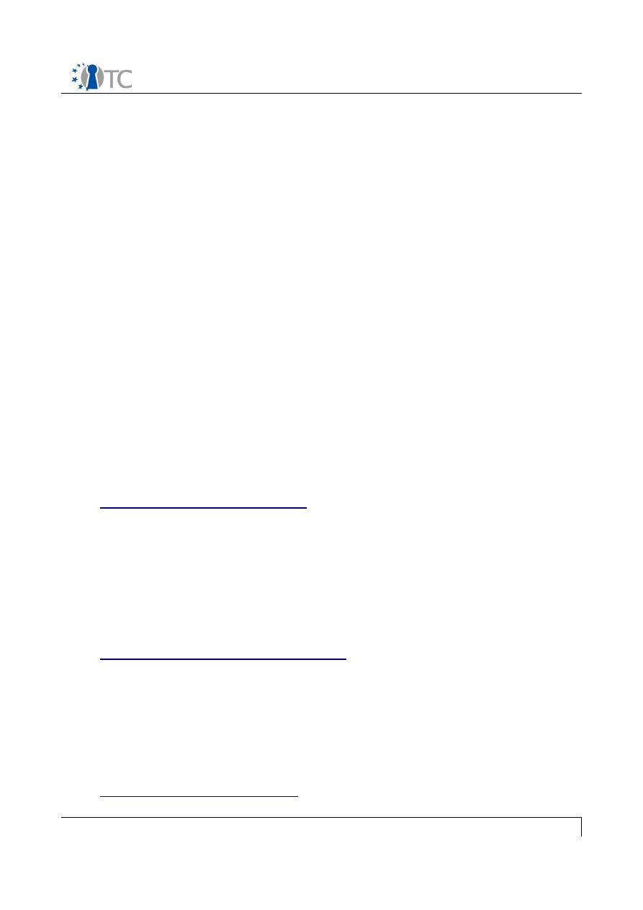

D6.6 Collection of all SWP deliverables
(nature=P,O) produced during months 25-36
Project number
IST-027635
Project acronym
Open_TC
Project title
Open Trusted Computing
Deliverable type
Prototype and Other
(see page 87/88 of Annex 1)
Deliverable reference number
IST-027635/D6.6/1.0
Deliverable title
Collection of all SWP deliverables
(nature=P,O) produced during months 25-36
WP contributing to the deliverable
WP6
Due date
M36 (officially postponed to Feb. 2009)
Actual submission date
18.02.2009
Responsible Organisation
LDV, Lehrstuhl fuer Datenverarbeitung, TU
Munich
Authors
Chun Hui Suen
Abstract
Collection of all SWP deliverables
(nature=P,O) produced during months 25-36
Keywords
OpenTC WP6
Dissemination level
Public
Revision
1.0
Instrument
IP
Start date of the
project
1
st
November 2005
Thematic Priority
IST
Duration
42 months
Collection of all SWP deliverables (nature=P,O) produced during months 25-36
V 1.0
Introduction:
This Deliverable is a collection of the following internal WP6 Deliverables out of the
Sub-Workpackages with Nature P (Prototype) and O (Other) within the period of M25 -
M36:
●
D06a.4 Final DRM system prototype including player application
●
D06b.6 Second MEITC prototype
●
D06b.7 Final MEITC prototype
●
D06c.3 WYSIWYS application prototype
●
D06d.3 Working Concept Prototype - EFS updated version
●
D06d.4 Fully Functional EFS without recovery feature - EFS updated version
●
D06d.5 Fully Functional EFS with recovery feature - Final version of EFS
If you need further information, please visit our website
www.opentc.net
or contact
the coordinator:
Technikon Forschungs-und Planungsgesellschaft mbH
Burgplatz 3a, 9500 Villach, AUSTRIA
Tel.+43 4242 23355 –0
Fax. +43 4242 23355 –77
Email
coordination@opentc.net
The information in this document is provided “as is”, and no guarantee
or warranty is given that the information is fit for any particular purpose.
The user thereof uses the information at its sole risk and liability.
Open_TC Deliverable 6.6
WP06a.4 Final system prototype including
player application
Project number
IST-027635
Project acronym
Open_TC
Project title
Open Trusted Computing
Deliverable type
Internal document
Deliverable reference number
IST-027635/D06a.4/FINAL | 1.00
Deliverable title
Final DRM system specification
WP contributing to the deliverable
WP6
Due date
Jan 2009
Actual submission date
Jan 2009
Responsible Organisation
LDV, Lehrstuhl für Datenverarbeitung, TUM
Authors
Chun Hui Suen, Florian Schreiner
Abstract
Keywords
DRM, fair, interoperable, MPEG-21
Dissemination level
Public
Revision
FINAL | 1.00
Instrument
IP
Start date of the
project
1
st
November 2005
Thematic Priority
IST
Duration
42 months

D06a.1 Preliminary DRM System Specification
FINAL | 1.00
Table of Contents
1 . Introduction............................................................................................................. 4
2 . Technical specifications........................................................................................... 4
2 .1 Overview................................................................................................................ 4
2 .1 Features of the prototype...................................................................................... 4
2 .1 DRM-Core interface................................................................................................ 5
2 .1.1 DRM-Core dependencies..................................................................................... 6
2 .1 Management Application....................................................................................... 6
2 .1.1 User Management............................................................................................... 7
2 .1.2 Packaging file structure...................................................................................... 7
2 .1.3 Fair Use features................................................................................................. 8
Suppo rt for Creative Commons licenses.................................................................... 8
Decen tralized structure............................................................................................. 8
Prote ction and enforcement...................................................................................... 8
Right s Expressions..................................................................................................... 9
2 .1.4 MPEG standards ................................................................................................. 9
1 . Secure video player............................................................................................... 10
2 . Usage guide........................................................................................................... 10
2 .1 Installation........................................................................................................... 10
2 .1 Management Application..................................................................................... 11
2 .1.1 Content creation mode..................................................................................... 12
2 .1.2 Content consumption mode.............................................................................. 13
2 .1.3 Secure Video Player.......................................................................................... 14
Open_TC Deliverable D06a.4
2/14

D06a.1 Preliminary DRM System Specification
FINAL | 1.00
List of figures
Figure 1: Overview of the prototype............................................................................... 4
Figure 2: Overview of the Management Application with the interfaces........................ 7
Figure 3: File structure................................................................................................... 8
Figure 4: Main window in content creation mode......................................................... 12
Figure 5: Dialog for the specification of the metadata................................................. 13
Figure 6: The main window in content consumption mode.......................................... 13
Figure 7: Configuration parameters for VLC................................................................. 14
Open_TC Deliverable D06a.4
3/14
D06a.1 Preliminary DRM System Specification
FINAL | 1.00
1. Introduction
This is the final prototype from WP6a which demonstrates the features of a
interoperable DRM solution for multimedia based on MPEG-21, built on the OpenTC
infrastructure.
2. Technical specifications
2.1 Overview
This final prototype consist of 3 main components:
●
the DRM-core,
●
the Management Application,
●
a secure video player based on VideoLan client (VLC).
Figure 1 provides an overview over of the prototype. The figure illustrates two hosts
named “Host A” and “Host B” and shows their compartments, within which the main
components listed above reside. The compartment interfaces and the data which may
be transferred between components are also shown.
2.1 Features of the prototype
The following features have been implemented in the DRM core service, the
management application and the secure video player components:
DRM-Core service
●
license insertion, management and deletion
●
license interpretation
●
license translation
●
license transfer and issuing
●
user management
●
content encryption key management
●
secure transfer of content key
Open_TC Deliverable D06a.4
4/14
Figure 1: Overview of the prototype
Management
Application
Host A
DRM Core Service
content key
licenses
network
Service Compartment
Management Compartment
transfer
Video Player
Player Compartment
content key
Management
Application
Host B
DRM Core Service
content key
licenses
Service Compartment
Management Compartment
transfer

D06a.1 Preliminary DRM System Specification
FINAL | 1.00
●
content key protection via sealing to TPM
Management Application
The Management Application provides the user interface and the functionalities for
content creation and management within the system. Furthermore it has an external
XML-RPC interface to exchange contents with other hosts.
The Management Application provides the following functionalities for the
management of contents:
●
File creation and parsing.
●
File format and metadata compliant to the ISO/IEC 23000-7 Open Access
Application Format with extensions to the standard.
●
Metadata management with a Graphical User Interface for:
○
content description,
○
author information,
○
copyright information,
○
license creation and interpretation,
○
relationships between contents and
○
transmission of event reports via e-mail and http.
●
Consumption of contents using the rights play (audio), print (text files), execute
and extract (other types).
●
Full implementation of the player interface of the DRM-Core service. Most
functions of the management interface are supported.
●
Usage of the DRM-Core for secure content key storage and license generation.
The software supports several fair-use features as part of the license management:
●
Support for Creative Commons licenses: Both in a human- and machine-
readable format.
●
Interpretation and implementation for the rights
○
copy,
○
burning,
○
selling and
○
assisted adaptation of contents.
●
License and copyrights notification and acknowledgment.
●
Support for the assisted derivation of contents.
The software also enables content management, for example:
●
Support for all types of content, not limited to audio or video.
●
Support for optional signing and encryption of contents.
●
Transfer of content and encryption key between different hosts.
A more detailed description of the functionalities is given in section 2.3.
Secure video player
●
Decryption of encrypted audio/video content
●
Display of license restrictions
2.1 DRM-Core interface
The DRM-Core runs as a service and provides a network interface, based on the XML-
RPC protocol. This interface controls all operations of the DRM-Core. The specification
of the DRM-Core was defined in D06a.3. A summary of the implemented interface
Open_TC Deliverable D06a.4
5/14

D06a.1 Preliminary DRM System Specification
FINAL | 1.00
functions are listed below.
Authentication:
●
getNonce – get a DRM-core generated nonce, for use in authentication
challenge-response
●
playerInit – initialize player session
●
managerInit – initialize manager session
●
close – close session
License management:
●
getAllLicenses – get all license identifiers in DRM-core
●
getLicense – retrieve a particular license
●
insertLicense – insert a new license
●
deleteLicense – delete a license
●
issueLicense – issue a new license
●
createTransferLicense – create a signed license for transfer to another core
●
translateLicense – translate a license into another REL language (e.g. MPEG21
to OMA)
Content Key management:
●
insertContentKey – insert a new content key, with a key condition
●
getDecryptionKey – get the content key of an item
●
getContentKeyCondition – retrieve the content key condition associated with a
key
User Management:
●
addUser – add a new user with authentication key
●
changeUserAuth – change user authentication key
●
getUserSigningKey – get user signing key generated by core
●
generateIdentity – generate an AIK identity for the core
●
activateIdentity – activate the AIK identity of the core
Core management:
●
shutdown – shutdown core
2.1.1 DRM-Core dependencies
The DRM-Core depends on the various libraries:
●
HSQL database
●
Java TSS stack and jTpmTools developed by IAIK
●
JCE developed by IAIK
●
jetty servlet environment
●
Apache xmlrpc library
The DRM-Core stores content keys and licenses, by sealing them to the TPM via the
Java TSS stack. For the current demonstrator where the virtual TPM has not been
finalized, the DRM-Core can run in a software emulation mode to provide similar
security functions.
Open_TC Deliverable D06a.4
6/14
D06a.1 Preliminary DRM System Specification
FINAL | 1.00
2.1 Management Application
The Management Application has not been described in detail in the previous
documents, because the software has only been recently integrated. This section
contains a high-level specification and description of the application.
The Management Application provides functionalities for the creation, exchange,
derivation and fair-use of contents. An overview of the application within the system is
shown in the figure 2.
The Management Application is able to manage all different types of content
independent of the content type. It enables the user to create files, which can then be
consumed by other users.
2.1.1 User Management
The Management Application allows for simple user management. User management
enables the creation of new users and manages the authentication of users with a
password. During user creation, an RSA-keypair is generated for the user and stored in
the secured storage. The private key from this key pair is used for signing the licenses
and the credentials during the content transfers within the system. The secured
storage contains the keys and the metadata of the users. The data is individually
encrypted for each user with the user password. The application authenticates users if
the user can provide the password for the respective storage. This user management
is preliminary, because for a complete DRM-system, a centralized user management
for all compartments and platforms is necessary.
2.1.2 Packaging file structure
The Management Application allows multiple contents to be packaged in a single
mpeg-21 compliant file. These mpeg-21 files are based on the the MPEG-21 File
Format. To add content to the system, the content creator can insert existing content
into the file and attach metadata to the content, such as author information or a
license. When the content creator has finished packaging, a mpeg-21 file containing
Open_TC Deliverable D06a.4
7/14
Figure 2: Overview of the Management Application with the interfaces
Management
Application
Host
DRM Core
Service
content key
licenses,
content keys
user keys,
metadata
licenses
file
system
network
files
store
Service Compartment
Management Compartment
store
transfer
D06a.1 Preliminary DRM System Specification
FINAL | 1.00
all information is created. A simplified structure of a mpeg21-file is shown in figure 3.
The mpeg-21 file is basically a package, which contains several “items” in a list. An
“item” is defined as a single asset, which contains the content and the attached
metadata. A more detailed description of the used technologies is given in section
2.3.4.
2.1.3 Fair Use features
The Management Application explicitly supports features for fair use. These features
allow a consumer to use a content as freely as possible. In the optimal case, the DRM
system is transparent to the user.
Support for Creative Commons licenses
Creative Commons is an organization, which provides different types of legal licenses
for the publication of content. All these legal licenses allow the consumer basic use
and redistribution of the content. The goal of these licenses is to improve the sharing,
distribution and re-usage of published contents. Our DRM system supports the legal
licenses defined by Creative Commons. The Management Application for example
notifies the user about the type of license attached to the content. The application
also allows the creation of a machine-readable license, which is an interpretation of
the intentions of the legal license. This machine-readable information can also be used
to hinder a user in performing an action, that might infringe the license. One example
is to check if the user is allowed to adapt a content.
Decentralized structure
In a centralized structure, only one specific content provider would be able to release
content. Our system is not limited to a specific content provider, because the
Management Application provides the functionality to create content. Each user has
thus the ability to create content for the system and to release it. This enables each
user to act as a content creator or as content consumer.
Protection and enforcement
The content creator can decide what type of protection he wants to apply. The
Management Application supports three different levels of protection.
For open and free distributable contents no protection mechanisms are used. This
Open_TC Deliverable D06a.4
8/14
Figure 3: File structure
MPEG-21 file
Content 1
copyright
author information
license
Content 2
copyright
author information
license
...

D06a.1 Preliminary DRM System Specification
FINAL | 1.00
content is stored in plain text in the mpeg21 file. As long as the file is used within the
Management Application, the license permissions can be applied. However there is no
cryptographic mechanism that prevents the user from using the content in other
applications. In this case, the DRM core is not involved, because there is no content
key and the license interpretation is performed in the Management Application.
If integrity protection and origin authentication is required, the content creator can
apply a signature to the content. The consumer can verify the signature and
determine if the content is authentic. However the consumer is not limited in the
usage of the content.
The most secure level uses signatures and the encryption of the content. As described
before, the signature allows the verification and authenticity of the content. The
encryption additionally provides confidentiality and ensures, that the content remains
within the system. For this level of security, the content keys and the licenses need to
be stored in sealed storage. Also the creation and signing of new licenses based on a
trusted infrastructure is needed. Both functions are provided by the DRM core.
Rights Expressions
The expressions of rights in the license are the main tool for the content creator to
specify which actions are permitted. The rights “play”, “print” and “execute” are
needed for the general perception and consumption of the content, but are not related
to a fair-usage. In order to be able to create licenses for fair-usage, specific actions are
supported in the application.
The rights “adapt” and “governedAdapt” express the permission and rule for the
adaptation of a content. The right “adapt” allows the adaptation without restriction,
while the right “governedAdapt” implies, that the same rights expressions are applied
to the adapted content as to the original content.
Furthermore the Management Application supports the right “copy” to create copies of
a content as well as the right “export” to permit the exportation of a content to
another media. In the Management Application the export of a content is realized as
the burning of an audio file to an audio CD.
The right “sell” allows the consumer to sell the content to another user. For this use
case a connection to another Management Application needs to be established. With
this connection the users on both sides can agree to the fee. After that the DRM Core
or the Management Application creates a new license, which is then transferred
together with the content to the buyer. If the content was encrypted, the content is
also transferred encrypted with the public key of the buyer.
2.1.4 MPEG standards
The Management Application implements several standards to provide interoperability
with other systems. The main functionalities and specifications are based on the
ISO/IEC 23000-7 Open Access Application Format and the ISO/IEC 21000-5/Amd3 Open
Access Content (OAC) profile. Both standards were developed within OpenTC as part
of the standardization activities in Workpackage 10.
The Management Application creates and manages files compliant to the Open Access
Open_TC Deliverable D06a.4
9/14

D06a.1 Preliminary DRM System Specification
FINAL | 1.00
Application Format standard. This standard defines an integrated solution to specify
an interoperable file format for the exchange of content. The Open Access Application
Format contains a profile of several other standards and integrates them into a
concise solution. The following standards are profiled and integrated in the standard:
•
ISO/IEC 21000-2, Information technology – Multimedia framework (MPEG-21) – Part 2:
Digital Item Declaration.
•
ISO/IEC 21000-3, Information technology – Multimedia framework (MPEG-21) – Part 3:
Digital Item Identification.
•
ISO/IEC 21000-5, Information technology – Multimedia framework (MPEG-21) – Part 5:
Rights Expression Language.
•
ISO/IEC 21000-9, Information technology – Multimedia framework (MPEG-21) – Part 9:
File Format.
•
ISO/IEC 21000-15, Information technology – Multimedia framework (MPEG-21) – Part
15: Event Reporting.
•
ISO/IEC 15938-5, Information technology – Multimedia content description interface
(MPEG-7) – Part 5: Multimedia description schemes.
The Open Access Application Format doesn't provide mechanisms for content
encryption. For this functionality the Management Application additionally contains the
ISO/IEC 21000-4, Information technology -- Multimedia framework (MPEG-21) --
Part 4: Intellectual Property Management and Protection Components
to specify the encryption tools and properties. This standard is integrated in such a
way, that the resulting file is still compliant to the Open Access Application Format
standard.
1. Secure video player
The secure video player is based on the VideoLan (VLC) player. The DRM capabilities
are implemented as an access filter module, such that they can be applied on all
media types supported by VLC. This module performs an XML-RPC connection using
the player-interface of the DRM-Core, to perform authentication and to retrieve the
content decryption key. Any restriction on the usage of the content is transferred to
the VLC player via an XML representation, and is displayed to the user.
2. Usage guide
2.1 Installation
The three components of this final prototype are built using the kiwi build system. In
order to build and install the system, the following steps should be taken:
Open_TC Deliverable D06a.4
10/14
D06a.1 Preliminary DRM System Specification
FINAL | 1.00
1. Retrieve the OpenTC kiwi build system either from the SVN repository
(
https://opentc.suse.de/svn/devel
) or via the provided tarball.
2. Prepare the installation by pre-fetching necessary packages:
make fetch
3. In the root directory of the kiwi system, build the required compartments:
make build DOM=DOM0
make build DOM=VLC
make build DOM=DRM
make build DOM=MGM
4. Prepare 2 partitions which are numbered consecutively, and put the device
name in the variable
ROO T F S
, in the file
F l a v o r s / d e f a u l t . c o n f i g
5. Install the compartments:
make install DOM=DOM0
make install DOM=VLC
make install DOM=DRM
make install DOM=MGM
6. Install the trustedgrub (www.trust.rub.de/home/concluded-
projects/trustedgrub/) boot loader, and point the start up partition to the first
installed partition.
7. Start the demonstrator system. When using xen virtualization, the DRM-Core
compartment will be started automatically in the background (no GUI interface),
while the VLC and Management Application can be started by the commands:
xm create /etc/xen/vm/vlc.conf
xm create /etc/xen/vm/mgm.conf
8. The usage features of the Management Application and the video player are
described in the next chapters.
2.1 Management Application
On the first startup the Management Application is initialized. The application requests
information about the user. When all information is entered, the application creates a
signing key pair and registers the user in the DRM core service.
After the initialization, the management console has two modes of operation: the
content creation and content consumption mode. They will be described in the
following sections.
Open_TC Deliverable D06a.4
11/14
D06a.1 Preliminary DRM System Specification
FINAL | 1.00
2.1.1 Content creation mode
In the content creation mode the user can browse through directories similar to an
archiving program. If the user creates a new mp21-file or opens an editable file, the
application shows the contents of the file as shown in figure 4.
In this view, the user can add content to the file and specify the metadata for the
content. The golden medals in this table indicate, that the corresponding content will
be signed when the file editing is released. The key symbol represents the encryption
of the content. An example of metadata for an item is shown in figure 5, which is the
metadata of a picture with the name “cottage.jpg”. The picture is licensed under a
Creative Commons license and will be signed and encrypted.
When the user finishes editing the metadata, he can release the file using the
“release” button in the toolbar from the main window. The file will then be finalized,
which also includes the signing and encryption of the content. The resulting file is an
mp21-file compliant with the specification. After that, the application switches
automatically into the content consumption mode.
Open_TC Deliverable D06a.4
12/14
Figure 4: Main window in content creation mode
D06a.1 Preliminary DRM System Specification
FINAL | 1.00
2.1.2 Content consumption mode
The content consumption mode is automatically shown, when a mp21-file is opened or
after the release. Figure 6 shows the main window in this mode of operation.
Open_TC Deliverable D06a.4
13/14
Figure 5: Dialog for the specification of the metadata
Figure 6: The main window in content consumption mode
D06a.1 Preliminary DRM System Specification
FINAL | 1.00
This mode allows the user only to view the metadata and to consume the content. A
consumption is performed if the user e.g. plays, prints or burns the content.
2.1.3 Secure Video Player
Usage of the secure video player is similar to opening a normal video. A user selects a
file in VLC player from the menu. The access filter module automatically detects if the
file is encrypted in the mpeg-21 file format, thus both encrypted and unencrypted files
can also be opened in the same player. The authentication and key retrieval process
happens transparently in the background.
Three parameters can be configured from the preference > Input / Codecs > Access
Filter > DRM filter panel. The “license server URL” field defines the XML-RPC URL of
the DRM-Core. The “user name” field defines the user name used for authentication
while the “user authentication file” defines the PKCS8 encoded private key. This key is
used to authenticate the identity of the user to the DRM-Core, and is an asymmetric
key shared between the management application and video player for authentication.
Open_TC Deliverable D06a.4
14/14
Figure 7: Configuration parameters for VLC
WP06b.6 Second MEITC Prototype
Project number
IST-027635
Project acronym
Open_TC
Project title
Open Trusted Computing
Deliverable type
Deliverable
Deliverable reference number
IST-027635/D6b.6/ Final / 1.00
Deliverable title
WP06b.6 Second MEITC Prototype
WP contributing to the deliverable
WP 6
Due date
Dec 08
Actual submission date
15 Dec 08
Responsible Organisation
TUBITAK
Authors
Görkem Çetin, Kadir İmamoğlu
Abstract
This internal deliverable is the installation
and configuration guide for MEITC system
Keywords
Dissemination level
Public
Revision
Instrument
IP
Start date of the
project
1
st
November 2005
Thematic Priority
IST
Duration
42 months

OTC-109: WP06b.6 Second MEITC Prototype
Table of Contents
1 Introduction............................................................................................................... 4
2 System requirements................................................................................................. 5
3 Installing dom0, domAPP and domDB........................................................................ 5
3.1 Preparation............................................................................................................. 5
3.2 Installation.............................................................................................................. 6
4 Dom0, domAPP and domDB Applications...................................................................7
4.1 Dom0 Applications................................................................................................. 7
4.1.1 OpenSSH........................................................................................................... 7
4.1.2 Trousers............................................................................................................ 8
4.1.3 TPM Tools.......................................................................................................... 8
4.2 DomAPP Applications............................................................................................. 8
4.2.1 Postfix............................................................................................................... 8
4.2.2 Dovecot............................................................................................................ 8
4.2.3 SASL................................................................................................................. 8
4.2.4 X-Sig................................................................................................................. 8
4.2.5 SquirrelMail....................................................................................................... 8
4.2.6 Sun-Jdk and Sun-Jre.......................................................................................... 8
4.2.7 Apache Tomcat................................................................................................. 8
4.2.8 Apache.............................................................................................................. 8
4.2.9 MEITC Administration........................................................................................ 8
4.2.1 0 MEITC Certificate Manager............................................................................. 8
4.2.1 1 OpenSSH......................................................................................................... 9
4.3 DomDB Applications............................................................................................... 9
4.3.1 MySQL............................................................................................................... 9
4.3.2 OpenSSL........................................................................................................... 9
4.3.3 OpenCA............................................................................................................. 9
5 Running MEITC System.............................................................................................. 9
6 Using MEITC System.................................................................................................. 9
6.1 Using MEITC Administration Web Application......................................................... 9
6.2 Using MEITC Certificate Manager Web Application............................................... 10
6.3 Using Squirrelmail Web Application......................................................................10
7 Features................................................................................................................... 10
7.1 Basic Features...................................................................................................... 10
7.1.1 Features of MEITC Administration Application................................................ 10
7.1.2 Features of MEITC Certificate Manager Application........................................ 11
7.1.3 Other Features................................................................................................ 11
7.2 TPM Related Features........................................................................................... 11
7.2.1 Sealing / unsealing MEITC database password............................................... 11
8 Troubleshooting MEITC............................................................................................ 12
8.1 Installation Problems............................................................................................ 12
8.2 Usage Problems.................................................................................................... 13
2/13

OTC-109: WP06b.6 Second MEITC Prototype
List of figures
Figure 1: Diagram of MEITC ........................................................................................... 4
Figure 2: Sealing database password........................................................................... 11
Figure 3: Unsealing database password....................................................................... 12
3/13
OTC-109: WP06b.6 Second MEITC Prototype
1
Introduction
This installation guide provides guidance with respect to the system requirements and
installation instructions for MEITC (Message Exchange Infrastructure for Trusted
Computing) prototype 3 system. While OpenSUSE 10.3 is used throughout this guide,
generic installation information is given where possible.
The Message Exchange Infrastructure for Trusted Computing (MEITC) intends to
provide a secure message exchange infrastructure for Linux using the Xen hypervisor,
TPM framework and TSS stack. The goals of this application are to ensure
confidentiality, authentication, non-repudiation and data integrity.
MEITC consists of the following components:
●
A web server, which handles all incoming requests. These requests are
forwarded to an e-mail server so that user mails can be read, replied to or
deleted.
●
An e-mail server, used to handle incoming and outgoing mails. The mail server
runs Postfix and Dovecot to answer POP3/IMAP connections.
●
A MySQL server, which holds users' mailbox data and metadata.
●
A CSP (Certificate Service Provider), used to hold users' certificates. CSP is also
responsible for updating and revoking the certificates in its database.
4/13
Figure 1: Diagram of MEITC
SSH
Database
dom0
OpenSSH
OpenSSL
domDB
domDB
Webmail
Certificate Manager
Connectrue Admin
Postfix, Dovecot,
SASL, X-Sig- SSH
domApp
domApp
Measurement
services
tGRUB
Physical hardware
TPM
Database
SSH
TPM Tools
Trousers
Suse 10.3
Mail Server
Certificate services
Certificate services

OTC-109: WP06b.6 Second MEITC Prototype
Since MEITC will run under a Xen hypervisor, all components explained above need to
be installed on domAPP or domDB compartments. Web server and e-mail server are
installed in domAPP, MySQL server and CSP are installed in domDB. domDB and
domAPP are Xen based virtual machines. These virtual machines are prepared using
OpenTC Suse kiwi system. Figure above shows a diagram of MEITC framework.
In MEITC system there are three application to use: MEITC Administration, MEITC
Certificate Manager and Squirrelmail webmail.
1. MEITC administration is used for managing whole MEITC system. Using this
application, one can create, update and delete e-mail users, monitor and
change MEITC services status (Postfix, Dovecot, Sasl, Apache, MySQL, SSH,TPM
etc.) in all MEITC compartments and make user certificate request, approve and
reject operations.
2. In MEITC certificate manager MEITC users can make a new certificate request
and view their approved certificates. This certificate is used for signing users' e-
mail messages. Users can also make a certificate revocation request.
3. Squirrelmail is a PHP based web application which users can send and read e-
mail messages to other users.
MEITC system is developed to provide a secure message exchange infrastructure for
Linux using the Xen hypervisor, TPM framework and TSS stack.
MEITC system can do the following:
1.
TPM Sealing:
In MEITC system database password is sealed to TPM. Sealing
process in MEITC system runs only once when the MEITC Admin or MEITC
Certificate Manager applications are executed for the first time after a new
installation.
2.
TPM Unsealing:
When users try to connect MEITC application, database
password is unsealed from TPM. In order to unseal database password, a sealing
process must be completed successfully after a new installation.
Every virtual machine running under Xen is called a "domain". The underlying
manager, which controls these domains is called Domain 0 (dom0).
2
System requirements
The MEITC system requires a powerful processor (i.e with a clock speed of more than 2
Ghz) and at least 2 GB of RAM to operate properly. During the installation process, at
least 20 Gb of free hard disk space will be required.
3
Installing dom0, domAPP and domDB
MEITC system consists of two virtual Xen compartments, namely domAPP and domDB.
These compartments need a Xen based dom0 kernel. Kiwi handles this automatically,
so there is no need for the end user to install a separate Linux kernel.
3.1 Preparation
To create compartments, these steps should be followed:
●
Install OpenSuse 10.3.
●
Install the following packages from OpenSuse 10.3 distribution via Yast or
similar RPM package management software.
5/13
OTC-109: WP06b.6 Second MEITC Prototype
make
svn
kiwi core
kiwi templates
●
Install the genext2fs package from the OpenTC repository, from
http://download.opensuse.org/repositories/security:/OpenTC/openSUSE_10.3/i586
●
Create two partitions, where each must be more than 2 GB in size and
formatted with ext2
●
Checkout OpenTC kiwi templates from the OpenTC SVN by running the following
command in an empty directory.
svn checkout https://opentc.suse.de/devel/demo2007/trunk/kiwi
Make the necessary changes for the two partitions previously created in
<working_dir>/Flavor/default.config file..<working_dir> is a location which shows
previously downloaded kiwi main directory downloaded from subversion, e.g
/demo2007/trunk/kiwi.
3.2 Installation
To create dom0, domApp and domDB compartments, these steps should be followed:
●
Copy the MEITC configuration folders (dom0, domApp, domDB) and
configuration files (configs.txt and Manifest.txt) to
<working_dir>/Projects/demo2007 directory.
●
Clean the destination devices, by running “make dest-clean” command in
<working_dir>.
●
Build the images, by running “make build” in <working_dir> directory.
●
Install the images by running “make install” command in <working_dir>
directory.
●
Install tGrub. You can simply install tGrub with the following steps. [If the two
partitions created with kiwi are not the first two partitions on disk, additional
steps should be performed to install Trusted Grub, which is specified in the kiwi
README file under <working_dir>/Docs/readme.]
●
Download the tGrub RPM package (trustedgrub-1.1.0-14.1.i586.rpm) from
http://download.opensuse.org/repositories/security:/OpenTC/openSUSE_1
0.3/i586/
●
Execute the following command:
rpm -i --force trustedgrub-1.1.0-14.1.i586.rpm
●
Verify /etc/grub.conf. It should contain the following:
setup --stage2=/boot/grub/stage2 (hd0) (hd0,5)
quit
hd0 stands for the MBR of the first hard disk and (hd0,5) stands for sda6
6/13
OTC-109: WP06b.6 Second MEITC Prototype
(where your opensuse is installed, it may be different on your machine)
●
install tgrub:
grub --batch < /etc/grub.conf
●
Add a boot entry in /boot/grub/menu.lst
title
demo 2007 -
CcatHome
root
(hd0,6)
configfile
/boot/grub/menu.lst
(hd0, 6) stands for sda7 and you have to adjust this to point to your
dom0-ro partition.
●
Reboot the platform
Here, each of the virtual machines need to get an IP address as listed below. These IP
addresses need not be same in each system, however to provide consistency it is
advised..
1. dom0 : 192.168.3.130
2. domAPP : 192.168.3.131
3. domDB : 192.168.3.132
If any of these IP addresses are modified, the following files also need to be changed
after copying the MEITC configuration files which are described in the installation
section.
●
In <working_dir>/Projects/demo2007/DOMAPP/root_sparse/var/lib/tomcat55
folder, the following files need to be modified:
- badmin/services.jsp
- badmin/log_list_mysql.jsp
- badmin/log_list_tomcat.jsp
- badmin/meitc_services.jsp
- badmin/tpm_detail.jsp
- badmin/includes/global.jsp
- badmin/includes/claros_db.jsp
- badmin/includes/tpm_status.jsp
- bcertmanager/includes/global.jsp
- bcertmanager/includes/claros_db.jsp
Note: This behaviour will change in the upcoming prototypes, providing a common
configuration file which will hold the IP information of domAPP, domDB and dom0.
4
Dom0, domAPP and domDB Applications
4.1 Dom0 Applications
The following applications are used in dom0 for MEITC. They are either automatically
installed via kiwi, or included in root_sparse directory.
4.1.1 OpenSSH
7/13

OTC-109: WP06b.6 Second MEITC Prototype
This application is required for secure connections between compartments and
sealing.
4.1.2 Trousers
Trousers (TPM device driver) is used to access TPM hardware.
4.1.3 TPM Tools
MEITC applications benefit from TPM tools commands to learn TPM status and device
information.
4.2 DomAPP Applications
4.2.1 Postfix
This application is used as the e-mail server in MEITC.
4.2.2 Dovecot
IMAP connections to Postfix mail server are established via this application.
4.2.3 SASL
This application is used for Postfix authentication.
4.2.4 X-Sig
E-mail signing application.
4.2.5 SquirrelMail
This application is a PHP-based messaging system used for reading and sending e-mail
messages. E-Mail messages which are sent from the squirrelmail web application are
signed with x-sig via postfix application.
4.2.6 Sun-Jdk and Sun-Jre
This application is used by Apache Tomcat.
4.2.7 Apache Tomcat
This application is used as a Web Server in the MEITC system. MEITC Administrator
and Certificate Manager applications need this application.
4.2.8 Apache
Squirrelmail requires Apache web server to run.
4.2.9 MEITC Administration
This application manages the whole MEITC system. User management and certificate
management are realized with this application.
4.2.10 MEITC Certificate Manager
MEITC users can create and view their own certificates using this application. Users
can also submit certificate revocation requests.
8/13

OTC-109: WP06b.6 Second MEITC Prototype
4.2.11 OpenSSH
This application is used to enable more secure communications between
compartments.
4.3 DomDB Applications
4.3.1 MySQL
MEITC System user information and credentials are stored in this database. Postfix
mail server is integrated with this application.
4.3.2 OpenSSL
PrivacyCA uses this application in the MEITC system.
4.3.3 OpenCA
OpenCA is used as the privacyCA in the MEITC system.
5
Running MEITC System
To run the MEITC system the following steps must be completed.
●
Boot the system.
●
Open a terminal in a graphical environment.
●
Changeuser mode to root with “su” command.
●
Configure network settings of dom0 compartment with the following script
sh internet
●
Run the following command. This opens domAPP compartment.
xm create /etc/xen/vm/domAPP.conf
●
In the shell box run the following command. This command opens domDB
compartment.
xm create /etc/xen/vm/domDB.conf
6
Using MEITC System
In the MEITC system there are three applications to use. These applications include
MEITC Administration, MEITC Certificate Manager and Squirrelmail web applications.
6.1 Using MEITC Administration Web Application
●
This application is used for managing the whole MEITC system. Using this
application you can create, update and delete e-mail users, you can see and
change MEITC services status (postfix, dovecot, sasl, tomcat, mysql etc.) in all
MEITC compartments and you can make user certificate requests, approve and
reject operations.
●
Open a browser from a different computer in the network
●
Type the following URL to open Java based MEITC Administration web
application which runs under Apache Tomcat.
9/13
OTC-109: WP06b.6 Second MEITC Prototype
http://192.168.3.131:8080/badmin
6.2 Using MEITC Certificate Manager Web Application
Using this application MEITC users can make a new certificate request and view
their approved certificates. This certificate is used for signing users' e-mail
messages.
●
Open a browser from a different computer in the network
●
Type the following URL to open Java based MEITC Certificate Manager which
runs under Apache Tomcat.
http://192.168.3.131:8080/bcertmanager
6.3 Using Squirrelmail Web Application
●
Using this PHP based web application users can send and read e-mail messages
to/from other users.
●
Open a browser from a different computer in the network
●
Type the following URL to open PHP based Squirrelmail web application which
runs under Apache.
http://192.168.3.131/squirrelmail
7
Features
7.1 Basic Features
7.1.1 Features of MEITC Administration Application
Basic features of MEITC Administration application is as follows:
●
Add, update and delete MEITC users
●
Add, update and delete MEITC admin user
●
View, stop and start MEITC services (ssh, mysql, postfix, dovecot etc) in
domApp, domDB and dom0
●
Request a certificate for a user
●
View and approve incoming certificate requests
●
Make a certificate revocation request for a user
●
View and approve incoming certificate revocation requests
●
View valid certificates
●
View revocated certificates
●
View log certificate status
●
View TPM / TSS Status information
●
View TPM / PCR Values
●
View, download and sign mail server log files
●
View, download and sign Tomcat log files
10/13
OTC-109: WP06b.6 Second MEITC Prototype
7.1.2 Features of MEITC Certificate Manager Application
Basic features of MEITC Certificate Manager application is as follows:
●
Make a certificate request
●
View certificate request data file
●
Make a certificate revocation request
●
View certificate data
●
View certificate status
7.1.3 Other Features
Other features of the MEITC system include the following:
●
Store MEITC user credential, certificate and other information on the database
●
Seal the database access password to the TPM
●
Unseal the database password from the TPM
●
C
reate TPM based certificates
7.2 TPM Related Features
7.2.1 Sealing / unsealing MEITC database password
In the MEITC system the database password is sealed to the TPM. The sealing process
in the MEITC system runs once when the MEITC Admin or MEITC Certificate Manager
applications are executed for the first time after a new installation. This process is
depicted below:
Figure 2: Sealing database password
When users try to connect MEITC application, database password is unsealed from
TPM. To unseal database password successfully, a sealing process must be completed
in the previous steps. Unsealing process is shown in the figure below:
11/13
meitc.dat file is
sealed with
tpm_seal command
Database password
which will be sealed is
written to meitc.dat file
MEITC administrator user
opens a console in dom0
Sealed file is copied to
the domApp
(/srv/www/tomcat55)
This sealed file will be unsealed during
the database connections of MEITC
Applications (MEITC applications are
MEITC Admin and Certificate Manager)
DomApp receives
the request and
opens a SSH
Connection to Dom 0
MEITC user types the
following URL
http://SERVER:8080/badmin
OTC-109: WP06b.6 Second MEITC Prototype
Figure 3: Unsealing database password
The unsealing process runs only for once at start-up of MEITC Administration or MEITC
Certificate Manager applications. The unsealed database password is stored in a
session variable. Session variables are stored in memory. These variables are valid for
the whole session time of the MEITC Administration and MEITC Certificate Manager
web applications. If client's browser session expires a new unsealing database
password process will be made.
8
Troubleshooting MEITC
8.1 Installation Problems
I can't install MEITC system, some errors occur and installation process
stops. What should I do?
–
Check your Open Suse 10.3 DVD is mounted and running successfully.
–
Examine installation log files for the errors in /data folder.
After the Installation of MEITC, the graphical environment does not run. How
can I solve this problem?
–
If your computer is an HP Compaq 6715b download and install the following RPM
package from https://svn.opentc.net/Workpackage 06/WP06b/ address to dom0
compartment.
fglrx_7_1_0_SUSE103-8.471-1.i386.rpm
12/13
MEITC user opens
a browser
DomApp sends the
sealed password
file to Dom0 over SSH
Sealed password file is
unsealed with TPM unseal
application
Unsealed data is
send back to
domAPP
Tomcat stores this
password to session
variables
Tomcat connects to
database using session
variable as a pasword

OTC-109: WP06b.6 Second MEITC Prototype
–
Find appropriate drivers for your graphical card and install it to the dom0
compartment.
8.2 Usage Problems
MEITC Administration or MEITC Certificate Manager does not run. How can I
solve this problem?
–
Please check dom0 compartment for network settings. If the IP address is different
from 192.168.3.130 run the following command in dom0.
sh internet
–
Check your TPM status in the BIOS and enable it if it is disabled.
–
Make sure that tGrub is running correctly.
–
Check Tomcat service status in the domAPP compartment.
–
Check Mysql service status in the domDB compartment.
–
Check ssh status information in dom0,domApp and domDB compartments
When I try to connect squirrelmail web application “Page is not found” error
occurs. What is the problem?
–
Please check your network connections
–
Check Apache service status in domApp compartment
I can't login to squirrelmail web application. What is the problem?
–
Check Dovecot status in the domAPP compartment
–
Check Postfix status in the domAPP compartment
–
Check Cyrus-sasl status in the domAPP comparment
–
Check MySQL service status in the domDB compartment
I can't send and receive email from squirrelmail web application. When I try
to send e-mail no error message occurs. What is the problem?
–
Check Dovecot status in the domAPP compartment
–
Check Postfix status in the domAPP compartment
–
Check Cyrus-sasl status in the domAPP comparment
When I make a certificate request an error occurs. What is the problem?
–
Check if the domDB compartment is running or not
–
Please check ssh service status in the domApp and domDB compartments
13/13
WP06b.7 Third MEITC Prototype
Project number
IST-027635
Project acronym
Open_TC
Project title
Open Trusted Computing
Deliverable type
Deliverable
Deliverable reference number
IST-027635/D6b.7/ Final / 1.00
Deliverable title
WP06b.7 Third MEITC Prototype
WP contributing to the deliverable
WP 6
Due date
Dec 08
Actual submission date
15 Dec 08
Responsible Organisation
TUBITAK
Authors
Görkem Çetin, Kadir İmamoğlu
Abstract
This internal deliverable is the installation
and configuration guide for MEITC system
Keywords
Dissemination level
Public
Revision
Instrument
IP
Start date of the
project
1
st
November 2005
Thematic Priority
IST
Duration
42 months

OTC-102: WP06b.7 Third MEITC Prototype
Table of Contents
1 Introduction............................................................................................................... 4
2 System requirements................................................................................................. 6
3 Installing dom0, domAPP and domDB........................................................................ 6
3.1 Preparation............................................................................................................. 6
3.2 Installation.............................................................................................................. 6
4 Dom0, domAPP and domDB Applications...................................................................8
4.1 Dom0 Applications................................................................................................. 8
4.1.1 OpenSSH........................................................................................................... 8
4.1.2 Trousers............................................................................................................ 8
4.1.3 TPM Tools.......................................................................................................... 8
4.1.4 OpenSSL TPM Engine........................................................................................ 8
4.2 DomAPP Applications............................................................................................. 8
4.2.1 Postfix............................................................................................................... 8
4.2.2 Dovecot............................................................................................................ 8
4.2.3 SASL................................................................................................................. 8
4.2.4 X-Sig................................................................................................................. 9
4.2.5 SquirrelMail....................................................................................................... 9
4.2.6 Sun-Jdk and Sun-Jre.......................................................................................... 9
4.2.7 Apache Tomcat................................................................................................. 9
4.2.8 Apache.............................................................................................................. 9
4.2.9 MEITC Administration........................................................................................ 9
4.2.1 0 MEITC Certificate Manager............................................................................. 9
4.2.1 1 OpenSSH......................................................................................................... 9
4.3 DomDB Applications............................................................................................... 9
4.3.1 MySQL............................................................................................................... 9
4.3.2 OpenSSL........................................................................................................... 9
4.3.3 OpenCA............................................................................................................. 9
5 Running MEITC System.............................................................................................. 9
6 Using MEITC System................................................................................................ 10
6.1 Using MEITC Administration Web Application....................................................... 10
6.2 Using MEITC Certificate Manager Web Application............................................... 10
6.3 Using Squirrelmail Web Application......................................................................10
7 Features................................................................................................................... 11
7.1 Basic Features...................................................................................................... 11
7.1.1 Features of MEITC Administration Application................................................ 11
7.1.2 Features of MEITC Certificate Manager Application........................................ 11
7.1.3 Other Features................................................................................................ 12
7.2 TPM Related Features........................................................................................... 12
7.2.1 Signing / Verifying MEITC Log Files................................................................. 12
7.2.2 Sealing / unsealing MEITC database password............................................... 14
8 Troubleshooting MEITC............................................................................................ 15
8.1 Installation Problems............................................................................................ 15
8.2 Usage Problems.................................................................................................... 16
2/17

OTC-102: WP06b.7 Third MEITC Prototype
List of figures
Figure 1: Diagram of MEITC ........................................................................................... 4
Figure 2: Creating a TPM based log certificate............................................................. 11
Figure 3: Signing a log file with TPM log certificate...................................................... 12
Figure 4: Verifying signed log file with TPM based log certificate................................. 12
Figure 5: Sealing database password........................................................................... 13
Figure 6: Unsealing database password....................................................................... 14
3/17
OTC-102: WP06b.7 Third MEITC Prototype
1
Introduction
This installation guide provides guidance with respect to the system requirements and
installation instructions for MEITC (Message Exchange Infrastructure for Trusted
Computing) prototype 3 system. While OpenSUSE 10.3 is used throughout this guide,
generic installation information is given where possible.
The Message Exchange Infrastructure for Trusted Computing (MEITC) intends to
provide a secure message exchange infrastructure for Linux using the Xen hypervisor,
TPM framework and TSS stack. The goals of this application are to ensure
confidentiality, authentication, non-repudiation and data integrity.
MEITC consists of the following components:
●
A web server, which handles all incoming requests. These requests are
forwarded to an e-mail server so that user mails can be read, replied to or
deleted.
●
An e-mail server, used to handle incoming and outgoing mails. The mail server
runs Postfix and Dovecot to answer POP3/IMAP connections.
●
A MySQL server, which holds users' mailbox data and metadata.
●
A CSP (Certificate Service Provider), used to hold users' certificates. CSP is also
responsible for updating and revoking the certificates in its database.
4/17
Figure 1: Diagram of MEITC
SSH
Database
dom0
OpenSSH
OpenSSL
domDB
domDB
Webmail
Certificate Manager
Connectrue Admin
Postfix, Dovecot,
SASL, X-Sig- SSH
Trusted Log
domApp
domApp
Measurement
services
tGRUB
Physical hardware
TPM
Database
SSH
TPM Tools
Trousers
OpenSSL TPM
Engine
Suse 10.3
Mail Server
Certificate services
Certificate services

OTC-102: WP06b.7 Third MEITC Prototype
Since MEITC will run under a Xen hypervisor, all components explained above need to
be installed on domAPP or domDB compartments. Web server and e-mail server are
installed in domAPP, MySQL server and CSP are installed in domDB. domDB and
domAPP are Xen based virtual machines. These virtual machines are prepared using
OpenTC Suse kiwi system. Figure above shows a diagram of MEITC framework.
In MEITC system there are three application to use: MEITC Administration, MEITC
Certificate Manager and Squirrelmail webmail.
1. MEITC administration is used for managing whole MEITC system. Using this
application, one can create, update and delete e-mail users, monitor and
change MEITC services status (Postfix, Dovecot, Sasl, Apache, MySQL, SSH,TPM
etc.) in all MEITC compartments and make user certificate request, approve and
reject operations. One can also sign and verify MEITC log files with TPM based
log certificate.
2. In MEITC certificate manager MEITC users can make a new certificate request
and view their approved certificates. This certificate is used for signing users' e-
mail messages. Users can also make a certificate revocation request.
3. Squirrelmail is a PHP based web application which users can send and read e-
mail messages to other users.
MEITC system is developed to provide a secure message exchange infrastructure for
Linux using the Xen hypervisor, TPM framework and TSS stack.
MEITC system can do the following:
1.
TPM Sealing:
In MEITC system database password is sealed to TPM. Sealing
process in MEITC system runs only once when the MEITC Admin or MEITC
Certificate Manager applications are executed for the first time after a new
installation.
2.
TPM Unsealing:
When users try to connect MEITC application, database
password is unsealed from TPM. In order to unseal database password, a sealing
process must be completed successfully after a new installation.
3.
TPM Based Log Certificate:
In order to sign a log file, a TPM certificate is
used. This TPM certificate can be created from MEITC Administration
application.
4.
Signing Log Files:
In signing process a log file's checksum data is signed
using TPM based log certificate file.
5.
Verifying Log Files:
Verification of a signed log file requires TPM based log
certificate and a signed log file. TPM based log certificate is previously used to
sign log file. In the verification process checksum data of the log file is
compared with unsigned log file.
Every virtual machine running under Xen is called a "domain". The underlying
manager, which controls these domains is called Domain 0 (dom0).
2
System requirements
The MEITC system requires a powerful processor (i.e with a clock speed of more than 2
5/17
OTC-102: WP06b.7 Third MEITC Prototype
Ghz) and at least 2 GB of RAM to operate properly. During the installation process, at
least 20 Gb of free hard disk space will be required.
3
Installing dom0, domAPP and domDB
MEITC system consists of two virtual Xen compartments, namely domAPP and domDB.
These compartments need a Xen based dom0 kernel. Kiwi handles this automatically,
so there is no need for the end user to install a separate Linux kernel.
3.1 Preparation
To create compartments, these steps should be followed:
●
Install OpenSuse 10.3.
●
Install the following packages from OpenSuse 10.3 distribution via Yast or
similar RPM package management software.
make
svn
kiwi core
kiwi templates
●
Install the genext2fs package from the OpenTC repository, from
http://download.opensuse.org/repositories/security:/OpenTC/openSUSE_10.3/i586
●
Create two partitions, where each must be more than 2 GB in size and
formatted with ext2
●
Checkout OpenTC kiwi templates from the OpenTC SVN by running the following
command in an empty directory.
svn checkout https://opentc.suse.de/devel/demo2007/trunk/kiwi
Make the necessary changes for the two partitions previously created in
<working_dir>/Flavor/default.config file..<working_dir> is a location which shows
previously downloaded kiwi main directory downloaded from subversion, e.g
/demo2007/trunk/kiwi.
3.2 Installation
To create dom0, domApp and domDB compartments, these steps should be followed:
●
Copy the MEITC configuration folders (dom0, domApp, domDB) and
configuration files (configs.txt and Manifest.txt) to
<working_dir>/Projects/demo2007 directory.
●
Clean the destination devices, by running “make dest-clean” command in
<working_dir>.
●
Build the images, by running “make build” in <working_dir> directory.
●
Install the images by running “make install” command in <working_dir>
directory.
●
Install tGrub. You can simply install tGrub with the following steps. [If the two
partitions created with kiwi are not the first two partitions on disk, additional
steps should be performed to install Trusted Grub, which is specified in the kiwi
6/17
OTC-102: WP06b.7 Third MEITC Prototype
README file under <working_dir>/Docs/readme.]
●
Download the tGrub RPM package (trustedgrub-1.1.0-14.1.i586.rpm) from
http://download.opensuse.org/repositories/security:/OpenTC/openSUSE_1
0.3/i586/
●
Execute the following command:
rpm -i --force trustedgrub-1.1.0-14.1.i586.rpm
●
Verify /etc/grub.conf. It should contain the following:
setup --stage2=/boot/grub/stage2 (hd0) (hd0,5)
quit
hd0 stands for the MBR of the first hard disk and (hd0,5) stands for sda6
(where your opensuse is installed, it may be different on your machine)
●
install tgrub:
grub --batch < /etc/grub.conf
●
Add a boot entry in /boot/grub/menu.lst
title
demo 2007 -
CcatHome
root
(hd0,6)
configfile
/boot/grub/menu.lst
(hd0, 6) stands for sda7 and you have to adjust this to point to your
dom0-ro partition.
●
Reboot the platform
Here, each of the virtual machines need to get an IP address as listed below. These IP
addresses need not be same in each system, however to provide consistency it is
advised..
1. dom0 : 192.168.3.130
2. domAPP : 192.168.3.131
3. domDB : 192.168.3.132
If any of these IPaddresses are modified, the following files also need to be changed
after copying the MEITC configuration files which are described in the installation
section.
●
In <working_dir>/Projects/demo2007/DOMAPP/root_sparse/keys/ folder, the
following file needs to be modified:
logcertificate.sh
●
In <working_dir>/Projects/demo2007/DOMAPP/root_sparse/var/lib/tomcat55
folder, the following files need to be modified:
7/17
OTC-102: WP06b.7 Third MEITC Prototype
- badmin/services.jsp
- badmin/log_list_mysql.jsp
- badmin/log_list_tomcat.jsp
- badmin/meitc_services.jsp
- badmin/tpm_detail.jsp
- badmin/includes/global.jsp
- badmin/includes/claros_db.jsp
- badmin/includes/tpm_status.jsp
- bcertmanager/includes/global.jsp
- bcertmanager/includes/claros_db.jsp
Note: This behaviour will change in the upcoming prototypes, providing a common
configuration file which will hold the IP information of domAPP, domDB and dom0.
4
Dom0, domAPP and domDB Applications
4.1 Dom0 Applications
The following applications are used in dom0 for MEITC. They are either automatically
installed via kiwi, or included in root_sparse directory.
4.1.1 OpenSSH
This application is required for secure connections between compartments, sealing
and signing.
4.1.2 Trousers
Trousers (TPM device driver) is used to access TPM hardware.
4.1.3 TPM Tools
MEITC applications benefit from TPM tools commands to learn TPM status and device
information.
4.1.4 OpenSSL TPM Engine
This application is used for signing MEITC log messages with openssl and TPM.
4.2 DomAPP Applications
4.2.1 Postfix
This application is used as the e-mail server in MEITC.
4.2.2 Dovecot
IMAP connections to Postfix mail server are established via this application.
4.2.3 SASL
This application is used for Postfix authentication.
4.2.4 X-Sig
E-mail signing application.
8/17
OTC-102: WP06b.7 Third MEITC Prototype
4.2.5 SquirrelMail
This application is a PHP-based messaging system used for reading and sending e-mail
messages. E-Mail messages which are sent from the squirrelmail web application are
signed with x-sig via postfix application.
4.2.6 Sun-Jdk and Sun-Jre
This application is used by Apache Tomcat.
4.2.7 Apache Tomcat
This application is used as a Web Server in the MEITC system. MEITC Administrator
and Certificate Manager applications need this application.
4.2.8 Apache
Squirrelmail requires Apache web server to run.
4.2.9 MEITC Administration
This application manages the whole MEITC system. User management, certificate
management and log signing operations are realized with this application.
4.2.10 MEITC Certificate Manager
MEITC users can create and view their own certificates using this application. Users
can also submit certificate revocation requests.
4.2.11 OpenSSH
This application is used to enable more secure communications between
compartments.
4.3 DomDB Applications
4.3.1 MySQL
MEITC System user information and credentials are stored in this database. Postfix
mail server is integrated with this application.
4.3.2 OpenSSL
PrivacyCA uses this application in the MEITC system.
4.3.3 OpenCA
OpenCA is used as the privacyCA in the MEITC system.
5
Running MEITC System
To run the MEITC system the following steps must be completed.
●
Boot the system.
●
Open a terminal in a graphical environment.
●
Changeuser mode to root with “su” command.
●
Configure network settings of dom0 compartment with the following script
9/17

OTC-102: WP06b.7 Third MEITC Prototype
sh internet
●
Run the following command. This opens domAPP compartment.
xm create /etc/xen/vm/domAPP.conf
●
In the shell box run the following command. This command opens domDB
compartment.
xm create /etc/xen/vm/domDB.conf
6
Using MEITC System
In the MEITC system there are three applications to use. These applications include
MEITC Administration, MEITC Certificate Manager and Squirrelmail web applications.
6.1 Using MEITC Administration Web Application
●
This application is used for managing the whole MEITC system. Using this
application you can create, update and delete e-mail users, you can see and
change MEITC services status (postfix, dovecot, sasl, tomcat, mysql etc.) in all
MEITC compartments and you can make user certificate requests, approve and
reject operations.
●
Open a browser from a different computer in the network
●
Type the following URL to open Java based MEITC Administration web
application which runs under Apache Tomcat.
http://192.168.3.131:8080/badmin
6.2 Using MEITC Certificate Manager Web Application
Using this application MEITC users can make a new certificate request and view
their approved certificates. This certificate is used for signing users' e-mail
messages.
●
Open a browser from a different computer in the network
●
Type the following URL to open Java based MEITC Certificate Manager which
runs under Apache Tomcat.
http://192.168.3.131:8080/bcertmanager
6.3 Using Squirrelmail Web Application
●
Using this PHP based web application users can send and read e-mail messages
to/from other users.
●
Open a browser from a different computer in the network
●
Type the following URL to open PHP based Squirrelmail web application which
runs under Apache.
http://192.168.3.131/squirrelmail
10/17

OTC-102: WP06b.7 Third MEITC Prototype
7
Features
7.1 Basic Features
7.1.1 Features of MEITC Administration Application
Basic features of MEITC Administration application is as follows:
●
Add, update and delete MEITC users
●
Add, update and delete MEITC admin user
●
View, stop and start MEITC services (ssh, mysql, postfix, dovecot etc) in
domApp, domDB and dom0
●
Request a certificate for a user
●
View and approve incoming certificate requests
●
Make a certificate revocation request for a user
●
View and approve incoming certificate revocation requests
●
View valid certificates
●
View revocated certificates
●
View log certificate status
●
Create TPM based log certificate
●
View TPM / TSS Status information
●
View TPM / PCR Values
●
View, download and sign mail server log files
●
View, download and sign Tomcat log files
7.1.2 Features of MEITC Certificate Manager Application
Basic features of MEITC Certificate Manager application is as follows:
●
Make a certificate request
●
View certificate request data file
●
Make a certificate revocation request
●
View certificate data
●
View certificate status
7.1.3 Other Features
Other features of the MEITC system include the following:
●
Store MEITC user credential, certificate and other information on the database
●
Seal the database access password to the TPM
●
Unseal the database password from the TPM
●
C
reate TPM based certificates
11/17
OTC-102: WP06b.7 Third MEITC Prototype
●
Sign and verify (with the TPM based certificate) MEITC Tomcat andmail log
7.2 TPM Related Features
7.2.1 Signing / Verifying MEITC Log Files
In order to sign a log file, a TPM certificate is used. This TPM certificate can be created
from MEITC Administration application in log management section. To create a TPM
based log certificate, following steps are performed:
Figure 2: Creating a TPM based log certificate
12/17
Admin User clicks
“Create Log Certificate”
button
Admin user clicks
“Log Certificate
Status” link
MEITC Admin user
logins to MEITC
administrator application
Apache tomcat (Dom App)
sends this request to
Dom0 over SSH
In dom0, log certificate is
created using openssl
and openssl TPM engine
applications
OTC-102: WP06b.7 Third MEITC Prototype
During the signing process a log file's checksum data is signed using TPM based log
certificate file. Signing a log file is depicted in the following figure:
Figure 3: Signing a log file with TPM log certificate
Verification of a signed log file requires a signed log file and the corresponding TPM
based log certificate. TPM based private key is previously used to sign log file. In the
verification process checksum data of the log file is compared with unsigned log file.
Figure 4: Verifying signed log file with TPM based log certificate
13/17
Mail log files are
shown on page
Admin user clicks
“mail logs” link
MEITC administrator
logs in to MEITC
administrator application
Admin user clicks
“Sign log file” button
Hash value of the mail log
file is signed with
previously created certificate
Signed file
is shown on
the screen
Signed log files are
shown on the screen
Admin user clicks
“mail logs” link
MEITC administrator
logs in to MEITC
administrator application
Admin selects one of
the signed log files
and clicks verify button
Signed log file is verified in
dom0 using openssl and
TPM based log certificate
Result of the
verification is shown
on the screen
OTC-102: WP06b.7 Third MEITC Prototype
7.2.2 Sealing / unsealing MEITC database password
In the MEITC system the database password is sealed to the TPM. The sealing process
in the MEITC system runs once when the MEITC Admin or MEITC Certificate Manager
applications are executed for the first time after a new installation. This process is
depicted below:
Figure 5: Sealing database password
14/17
meitc.dat file is
sealed with
tpm_seal command
Database password
which will be sealed is
written to meitc.dat file
MEITC administrator user
opens a console in dom0
Sealed file is copied to
the domApp
(/srv/www/tomcat55)
This sealed file will be unsealed during
the database connections of MEITC
Applications (MEITC applications are
MEITC Admin and Certificate Manager)
OTC-102: WP06b.7 Third MEITC Prototype
When users try to connect MEITC application, database password is unsealed from
TPM. To unseal database password successfully, a sealing process must be completed
in the previous steps. Unsealing process is shown in the figure below:
Figure 6: Unsealing database password
The unsealing process runs only for once at start-up of MEITC Admin or MEITC
Certificate Manager applications. The unsealed database password is stored in a
session variable. Session variables are stored in memory. These variables are valid for
the whole session time of the MEITC Admin and MEITC Certificate Manager web
applications. If client's browser session expires a new unsealing database password
process will be made.
8
Troubleshooting MEITC
8.1 Installation Problems
I can't install MEITC system, some errors occur and installation process stops. What should
I do?
–
Check your Open Suse 10.3 DVD is mounted and running successfully.
–
Examine installation log files for the errors in /data folder.
15/17
DomApp receives
the request and
opens a SSH
Connection to Dom 0
MEITC user types the
following URL
http://SERVER:8080/badmin
MEITC user opens
a browser
DomApp sends the
sealed password
file to Dom0 over SSH
Sealed password file is
unsealed with TPM unseal
application
Unsealed data is
send back to
domAPP
Tomcat stores this
password to session
variables
Tomcat connects to
database using session
variable as a pasword

OTC-102: WP06b.7 Third MEITC Prototype
After the Installation of MEITC, the graphical environment does not run. How can I solve
this problem?
–
If your computer is an HP Compaq 6715b download and install the following RPM
package from https://svn.opentc.net/Workpackage 06/WP06b/ address to dom0
compartment.
fglrx_7_1_0_SUSE103-8.471-1.i386.rpm
–
Find appropriate drivers for your graphical card and install it to the dom0
compartment.
8.2 Usage Problems
MEITC Administration or MEITC Certificate Manager does not run. How can I solve this
problem?
–
Please check dom0 compartment for network settings. If the IP address is different
from 192.168.3.130 run the following command in dom0.
sh internet
–
Check your TPM status in the BIOS and enable it if it is disabled.
–
Make sure that tGrub is running correctly.
–
Check Tomcat service status in the domAPP compartment.
–
Check Mysql service status in the domDB compartment.
–
Check ssh status information in dom0,domApp and domDB compartments
When I try to connect squirrelmail web application “Page is not found” error occurs. What
is the problem?
–
Please check your network connections
–
Check Apache service status in domApp compartment
I can't login to squirrelmail web application. What is the problem?
–
Check Dovecot status in the domAPP compartment
–
Check Postfix status in the domAPP compartment
–
Check Cyrus-sasl status in the domAPP comparment
–
Check MySQL service status in the domDB compartment
I can't send and receive email from squirrelmail web application. When I try to send e-mail
no error message occurs. What is the problem?
–
Check Dovecot status in the domAPP compartment
–
Check Postfix status in the domAPP compartment
–
Check Cyrus-sasl status in the domAPP comparment
16/17

OTC-102: WP06b.7 Third MEITC Prototype
When I make a certificate request an error occurs. What is the problem?
–
Check if the domDB compartment is running or not
–
Please check ssh service status in the domApp and domDB compartments
I can't create log certificate file. What is the problem?
–
Check the ssh service status in domApp and dom0
–
Check network settings of the dom0 compartment, If the IP address is different from
192.168.3.131 run the following command in /root directory.
sh internet
17/17
WP06c.3 WYSIWYS application prototype
Project number
IST- 027635
Project acronym
Open_TC
Project title
Open Trusted Computing
Deliverable type
Internal document
Deliverable reference number
IST-027635/D06c.3/FINAL 1.00
Deliverable title
WYSIWYS application prototype
WP contributing to the deliverable
WP6
Due date
Oct 2008 - M36
Actual submission date
Jan 2009 - M39
Responsible Organisation
Politecnico di Torino
Authors
Giovanni Cabiddu and Gianluca Ramunno
(POL)
Abstract
WYSIWYS is a functional and security
requirement for electronic signatures,
especially when used in legal contexts.
This document describes the procedures for
building, installing and configuring WYSIWYS
application version 0.1.0 designed for
OpenTC security architecture.
Keywords
Open_TC, WYSIWYS
Dissemination level
Public
Revision
FINAL 1.00
Instrument
IP
Start date of the
project
1
st
November 2005
Thematic Priority
IST
Duration
42 months

WP06c.3 WYSIWYS application prototype
FINAL 1.00
Table of Contents
1 Introduction.............................................................................................................. 5
2 Building and installing WYSIWYS............................................................................... 5
2. 1 Important notes.................................................................................................... 5
2. 2 Introduction.......................................................................................................... 6
2. 3 WYSIWYS prerequisites and building procedures................................................. 6
2.3. 1 List of prerequisites......................................................................................... 6
2.3. 2 Adding OpenTC repository via zypper............................................................. 7
2.3. 3 Adding OpenTC repository via Yast (alternative procedure)............................ 7
2.3. 4 Installing required packages (prerequisites)....................................................7
2.3. 5 Configuring TrustedGRUB................................................................................ 8
2.3. 6 WYSIWYS application building/installing procedure......................................... 8
2. 4 Overview of WYSIWYS components...................................................................... 9
3 Using WYSIWYS application.................................................................................... 12
3. 1 Starting the platform.......................................................................................... 12
3. 2 Setting the system when running on a HP DC7700............................................ 12
3.2. 1 TrustedGRUB configuration........................................................................... 12
3.2. 2 X server configuration................................................................................... 12
3.2.2. 1 Configuration at first boot after creation/installation...............................12
3.2.2. 2 Configuration at every boot..................................................................... 13
3. 3 Configuring the WYSIWYS application................................................................ 13
3.3. 1 Step-by-step procedure................................................................................. 13
3.3.1. 1 Start WYSIWYS application...................................................................... 13
3.3.1. 2 Register a smart card key into Trusted Integrity DB............................... 13
3. 4 Using the WYSIWYS application.......................................................................... 15
3.4. 1 Step-by-step procedure................................................................................. 15
3.4.1. 1 Start WYSIWYS application...................................................................... 15
3.4.1. 2 Start the Untrusted (i.e. user' s) VM and sign a document...................... 15
3.4.1. 3 Start the Untrusted VM and verify a signed document............................17
3.4.1. 4 Alternative way to start the signing/verifying procedure........................ 17
3.4.1. 5 Signing an already signed document...................................................... 17
3.4.1. 6 Stop the whole system............................................................................ 18
3. 5 Reconfiguring the WYSIWYS application after a system update.........................18
3. 6 Limitation of the current version........................................................................ 18
4 List of Abbreviations............................................................................................... 19
5 Related Work.......................................................................................................... 19
Open_TC Deliverable 06c.3
2/19

WP06c.3 WYSIWYS application prototype
FINAL 1.00
List of figures
Figure 1: WYSIWYS application and components..........................................................10
Open_TC Deliverable 06c.3
3/19

WP06c.3 WYSIWYS application prototype
FINAL 1.00
List of Tables
Open_TC Deliverable 06c.3
4/19

WP06c.3 WYSIWYS application prototype
FINAL 1.00
1 Introduction
“What You See Is What You Sign” (WYSIWYS) is a functional and security requirement
for electronic signatures, especially when used in legal contexts (e.g. the European
Directive 1999/93/EC on electronic signatures). To guarantee the trustworthiness of
the content displayed and being signed, there is the need to guarantee a trusted path
from the signing (or verifying) application to the user and in the opposite direction.
Many past and present solutions that claim to be WYSIWYS compliant, in reality they
are not. In fact they do not protect against the Trojan software or “malware” that can
act on either the document image displayed to the user or the user’s input to activate
the signing device operations. This is caused by the insecure architecture of the I/O
subsystems integrated within the current monolithic Operating Systems.
Therefore the design of a WYSIWYS application must also take into account the
underlying architecture in order to guarantee the actual trustworthiness of the
application. In particular trusted input/output paths between the application and the
user must be must be in place in order to guarantee the correct binding between the
document presentation and the data actually signed or verified.
The security properties and services provided by OpenTC architecture can be used as
foundation for a WYSIWYS application; enabling features from OpenTC are the trusted
GUI, the assurance about the integrity of the security architecture and of the
application. Moreover memory isolation through virtualisation and information flow
control policies allow designing the WYSIWYS application in a modular fashion with a
strong confinement of components with different levels of requirements for strength.
Another relevant aspect is the correctness of the document presentation. Given the
complexity of the current document formats, designing and implementing trustworthy
viewers solely for the purpose of a secure electronic signature does not match the
market requirements, making this infeasible in practice. However a pragmatic
approach can be used to go in the right direction for meeting this requirement:
standard applications used to produce the documents being signed can be used as
“trusted viewers” provided that they are properly configured to avoid hidden content,
and dynamic content which depends on the platform configuration or on the time
when the document is presented.
This is the companion document for
D06c.3_otc-pol-wysiwys-complete-
0.1.tar.gz
, the
tarball including source code and binary RPM packages of the
WYSIWYS application. This document describes the procedures for building, installing,
configuring the WYSIWYS application version 0.1.
2 Building and installing WYSIWYS
2.1 Important notes
Building/installing the WYSIWYS application version 0.1 requires the creation of two
free partitions and the installation of the boot loader TrustedGRUB. All these
operations must be performed by skilled people because an error during installation
may cause the platform to not boot anymore, if something fails.
The TPM ownership
must
be already taken; the password for the TPM owner
must
be
set to:
ownerpwd
Open_TC Deliverable 06c.3
5/19
WP06c.3 WYSIWYS application prototype
FINAL 1.00
The Storage Root Key (SRK) must have the password set to:
srkpwd
2.2 Introduction
WYSIWYS version 0.1 is distributed as tarball
D06c.3_otc-pol-wysiwys-complete-
0.1.tar.gz
associated to this document and containing the following folders:
●
KIWI
: contains a tarball including kiwi scripts and templates (called OpenTC
Build System or OTCBS) for the creation of a complete system, based on
OpenTC CC@H prototype, which includes the WYSIWYS application;
●
RPMS
: contains the binary RPM packages for the i586 platform which includes
the components of the WYSIWYS application; they are necessary to run OTCBS;
●
SOURCES
: contains a tarball with the source code of the WYSIWYS application
(it is necessary only if someone wants to recreate the RPM packages);
●
SPECS
: contains the "spec" file for rebuilding the RPM packages (it is necessary
only if someone wants to recreate the RPM packages);
●
SRPMS
: contains the source RPM packages which includes the tarball with the
source code of the WYSIWYS application and the "spec" file (it is necessary only
if someone wants to recreate the RPM packages, as alternative way than
starting from SOURCES and SPECS).
Before building/installing WYSIWYS application, some prerequisites must be met. In
the following subsection all prerequisites are listed as well as the building procedure is
explained.
2.3 WYSIWYS prerequisites and building procedures
2.3.1 List of prerequisites
The following prerequisites must be satisfied to build, install and run the WYSIWYS
application:
●
the application must be generated and installed onto the same platform;
●
a hardware platform with TPM 1.2 and ownership correctly taken is required;
currently it has been tested only on HP dc7700 platform but it should also work
on HP Compaq nx6325 and HP Compaq 6510b/ 6710b;
●
a smart card reader supported by OpenCT is required; see the updated list on
OpenCT Web page (
http://www.opensc-project.org/openct/
);
●
the WYSIWYS application was tested with GEMPLUS GemPC Twin Usb;
●
a smart card supported by OpenSC is required; moreover it must include
the
serial number that can be reported via PKCS#11 interface
; see the
updated list on OpenSC Web page (
http://www.opensc-project.org/opensc/
);
●
the WYSIWYS application was tested with Politecnico di Torino student's
ID card (a special smart card distributed by Infocert, formely Infocamere);
●
to build the WYSIWYS application a system running a standard and up-to-date
openSUSE 10.3 distribution is required, with:
●
superuser privileges, i.e. logged in as
root
account;
Open_TC Deliverable 06c.3
6/19
WP06c.3 WYSIWYS application prototype
FINAL 1.00
●
at least 16GB free on the openSUSE 10.3 partition;
●
two
consecutive empty
partitions with respectively 2GB and 10GB of
free space;
●
connected to the Internet;
●
openSUSE 10.3 distribution standard DVD available within the DVD drive;
●
the following packages installed (explanation on how to install them in
the following):
●
make
●
subversion
●
wget
●
kiwi
●
genext2fs
(from OpenTC repository)
●
trustedgrub
(OpenTC repository; TrustedGRUB must be
configured by adding an entry for WYSIWYS application;
explanation in the following)
2.3.2 Adding OpenTC repository via zypper
Adding the OpenTC repository to the Yast configuration is a required operation in order
to install some prerequisite packages; the operation can be done with the following
console command:
●
zypper addrepo -t rpm-md
http://download.opensuse.org/repositories/security:/OpenTC/openSUSE_10.3/
OpenTC
2.3.3 Adding OpenTC repository via Yast (alternative procedure)
An alternative procedure for adding repositories can be performed using Yast from
console
1
. Yast can be started via console command:
yast
then select
Software -> Software repositories -> Add -> HTTP
. Then fill in the
field “Server Name” with:
download.opensuse.org
and the field “Directory on Server” with:
/repositories/security:/OpenTC/openSUSE_10.3/
2.3.4 Installing required packages (prerequisites)
Now the packages previously listed can be installed.
The packages can be installed by executing the console command:
1 a similar sequence can be performed using the GUI version of Yast, which can be started by
Menu Computer -> Control Center -> Yast -> Software Repositories
for adding a
new repository
Open_TC Deliverable 06c.3
7/19

WP06c.3 WYSIWYS application prototype
FINAL 1.00
# zypper install <package> <package> ...
where
<package>
is each one of the listed packages among the prerequisites.
While installing the listed packages, if they depend on additional packages, the latter
are automatically downloaded and installed.
2.3.5 Configuring TrustedGRUB
Once the package for TrustedGRUB has been installed, it must also be configured, i.e.
installed onto the Master Boot Record (MBR): this must be done only once.
NOTE: the next steps must be executed by experienced and aware users.
Let's suppose that the openSUSE 10.3 system that will be used to build/install the
WYSIWYS application has been installed on the first volume of the extended partition
of the first hard disk, i.e. on the Linux device /dev/sda5.
First it must be verified that the file
/etc/grub.conf
contains the following lines (it
must be updated accordingly, if the case):
setup --stage2=/boot/grub/stage2 (hd0) (hd0,4)
quit
where (hd0) stands for the MBR of the first hard disk and (hd0,4) stands for sda5
where openSUSE is installed in the example.
Then TrustedGRUB must be actually installed by executing the following command
from console:
# grub --batch < /etc/grub.conf
Finally, a new boot entry for the WYSIWYS application must be added to the menu file;
edit
/boot/grub/menu.lst
by appending the following lines:
title OpenTC WYSIWYS application
root (hd0,5)
configfile /boot/grub/menu.lst
2.3.6 Procedurefor building/installing the WYSIWYS application
Since this application code can only be used with a complete system composed of
several Virtual Machines, the installation must be done using OTCBS with the RPM
packages containing the WYSIWYS components.
How to rebuild the RPM packages is a known practice and is out of the scope of this
document. It can be done using the
rpmbuild
command or the SUSE “chrooted”
'
build
' environment. Detailed instructions on how to build RPM packages can be found
in the online book Maximum RPM (http://rpm5.org/docs/max-rpm.html).
To rebuild the WYSIWYS RPM packages, in addition to the packages included in the
standard distribution, also the following ones:
trousers
,
trousers-devel
and
libtspi1
, which are available from:
http://download.opensuse.org/repositories/security:/OpenTC/openSUSE_10.3/i586/
must be present.
Open_TC Deliverable 06c.3
8/19

WP06c.3 WYSIWYS application prototype
FINAL 1.00
To build/install WYSIWYS the following steps must be executed:
●
unpack the main tarball
# tar zxvf D06c.3_otc-pol-wysiwys-complete-0.1.tar.gz
●
change the the current directory to the root of the unpacked tarball
# cd otc-pol-wysiwys-complete-0.1
●
copy the binary RPM packages to the location needed by OTCBS:
# mkdir -p /data/RPMs
# cp RPMS/* /data/RPMs
●
unpack OTCBS:
# cd KIWI
# tar zxvf otc-pol-wysiwys-kiwi-0.1.tar.gz
# cd otc-pol-wysiwys-kiwi-0.1
●
configure the partition for the installation:
# vi Flavors/default.config
=> update the variable ROOTFS with the device of the first of the two free
consecutive partitions
NOTE: ROOTFS can be any hard disk device (including an external USB storage!)
like
/dev/hdYX
or
/dev/sdYX
(Y=a,b,c ... X=1,2,3,...,10,11,...).
Example: if the free partitions for CC@H are volumes in an extended partition of
the first hard disk, identified under Linux as:
/dev/sda6
/dev/sda7
then the aforementioned variable must be set to the first free partition:
ROOTFS=/dev/sda6
●
start the build/installation process of the system and application:
# ./build_wysiwys.sh
NOTE: the time needed to create and install the system varies according to the
power of the platform and the network speed. For a HP dc7700 machine and
a good bandwidth (more than a hundred MBit/s) it usually takes 2.5-3 hours.
●
reboot the platform
Open_TC Deliverable 06c.3
9/19

WP06c.3 WYSIWYS application prototype
FINAL 1.00
2.4 Overview of WYSIWYS components
The WYSIWS application if composed of several components, some of them running in
Xen Domain-0 and other ones running in their own guest domains (i.e. Virtual
Machines):
●
Control Service (CS)
: this component implements the whole logic of the
application and controls all other modules; it provides the only interface
exposed to a standard Virtual Machine used for day-by-day tasks which will be
used to create the document being signed and to activate the WYSIWYS
application (it runs in its own domain, called CS, and is provided by the package
otc-pol-wysiwys-cs
);
●
Signing Device Interface (SDI)
: this component controls the signing device
(and includes all required drivers), performs the digest operation in software
and implements the creation and the of the PKCS#7 envelope for signed
documents (it runs in Domain-0 and is provided by the package
otc-pol-
wysiwys-sdi
);
●
Trusted Integrity Service (TIS)
: this component controls all operations
related to the integrity of the platform (i.e. the interactions with the TPM),
including the creation of the platform integrity certifications that will be
embedded within the PKCS#7 envelope (it runs in Domain-0 and is provided by
the package
otc-pol-wysiwys-tis
);
●
Trusted Storage Service (TS)
: this component implements a Trusted Storage
Software Write Once Read Many (SWORM) used to store the document being
signed/verified, which is then read by all other modules (it runs in its own
domain, called TS, and is provided by the package
otc-pol-wysiwys-tss
);
●
Trusted User Interface (TUI)
: this component implements the Trusted
Interface of the application to the user: it is used to request the type of
operation to be performed (signing/verifying), to input the PIN for the smart
card and to show the attributed being signed (it runs in its own domain, called
TUI, and is provided by the package
otc-pol-wysiwys-tui
);
●
Trusted Viewer Service (TVS)
: this component implements the Trusted
Viewer in charge of correctly presenting to the user the document being
signed/verified (it runs in its own domain, called TVS, and is provided by the
package
otc-pol-wysiwys-tvs
);
●
Trusted Window Service (TWS)
: this component controls which component's
output must be displayed, i.e. which domain screen must be put in foreground
(it runs in Domain-0 and is provided by the package
otc-pol-wysiwys-tws
);
●
Untrusted User Interface (UUI)
: this component interacts with the CS to
request the signing/verifying operations and runs in a standard, fully-fledged
Virtual Machine that the user would use for day-by-day tasks and to create the
document to sign; this VM could also run MS Windows as Operating System (it
runs in its own domain, called UUI, and is provided by the package
otc-pol-
wysiwys-uui
).
There are two other packages being part of the application, i.e.
otc-pol-wysiwys
and
otc-pol-wysiwys-xevent
. The former includes configuration files common to all
modules, the latter a component needed by TWS to control the Trusted Bar.
Open_TC Deliverable 06c.3
10/19

WP06c.3 WYSIWYS application prototype
FINAL 1.00
The WYSIWYS application also requires few packages normally available from the
standard distribution but which have been updated for this application. These
packages are available from the OpenTC repository on the SUSE public build server,
and are automatically fetched and installed during the installation/creation procedure.
These packages are:
●
openssl-otc-pol-0.9.8a
(specific for WYSIWYS: support for signed/unsigned
PKCS#7 attributes);
●
trousers-0_3_1
(specific for WYSIWYS: fix for loading TPM authenticated keys);
●
tpm-tools
(used by all OpenTC prototypes based on CC@H: support for SRK
password input with
tpm_sealdata
and
tpm_unsealfile
tools).
In figure 1 the whole WYSIWYS application is represented with all components and the
virtual machines where they reside.
In the current prototype SDI runs in Domain-0 because of a performance problem of
the hypervisor which occurs when the hardware signing device is assigned to a guest
domain; when this problem will be fixed, SDI will be moved to its own Virtual Machine.
This system could be enhanced to record the whole user experience to be then shown
afterwards to the verifier: the possible future component implementing the recording
service is also represented in the figure and is called Trusted Recorder Service (it
would run in Domain-0).
Open_TC Deliverable 06c.3
11/19
Figure 1: WYSIWYS application and components

WP06c.3 WYSIWYS application prototype
FINAL 1.00
3 Using WYSIWYS application
3.1 Starting the platform
At every boot, when the TrustedGRUB menu is displayed:
●
select the menu item related to WYSIWYS
●
select CC@H - Xen
●
select config #1 (vpnClient)
●
wait for system to boot
3.2 Setting the system when running on a HP dc7700
Among the supported platforms, only HP dc7700 requires few special configurations.
3.2.1 TrustedGRUB configuration
At every boot the following operations must be performed when the TrustedGRUB
menu is displayed:
●
select the menu item related to WYSIWYS
●
select CC@H - Xen
●
select config #1 (vpnClient)
●
press soon ESC (during the countdown)
●
edit the configuration
press 'e'
select the line with Linux kernel (
/.../vmlinuz-...
)
press 'e'
after '#' type
pci=conf1
press <ENTER>
press 'b'
3.2.2 X server configuration
3.2.2.1 Configuration at first boot after system creation/installation
The configuration of the X server must be performed only at the first boot after the
creation/installation procedure. The platform does not display the graphic environment
because the X server cannot be started, therefore:
●
log in as root with empty password
●
create a new X server configuration
# Xorg -configure
# cp xorg.conf.new /etc/X11/xorg.conf.xen
●
start X server
Open_TC Deliverable 06c.3
12/19

WP06c.3 WYSIWYS application prototype
FINAL 1.00
# startx
3.2.2.2 Configuration at every boot
When starting X server after being configured and at every boot, the graphic
environment is displayed but set to 1280 by 1024 pixels resolution. The current
version of WYSWYS application is designed to properly display the output of the
different virtual machines only at the resolution of 1024 by 768 pixels. To set the this
resolution, execute the following command from a Domain-0 console (to open the
console, right click on the black screen and click on 'Xterm' menu item):
# xrandr -s 1024x768
3.3 Configuring the WYSIWYS application
3.3.1 Step-by-step procedure
NOTE: all commands must be performed from Domain-0 console, if not otherwise
specified. To open the console, right click on the black screen and click on 'Xterm'
menu item.
3.3.1.1 Start the WYSIWYS application
●
plug in a smart card reader into the PC but
do not insert
the user's smart card
yet!
●
start all services and application Virtual Machines
# otc-start-wysiwys
NOTE: during the startup the full screen displays of the Virtual Machines just
started are shown for a while; wait for Domain-0 screen being displayed again.
●
input the SRK password upon request
NOTE: whenever the WYSIWYS application is started, all VMs that compose the
application are measured. Particularly, at the first run, after the completion of the
measurement procedure, a symmetric key is generated and sealed. That key is used
to encrypt a disk image used for storing the database of the keys (Trusted Integrity
Service DB or TISdb).
If the encrypted image already exists, because of previous runs of the application,
otc-start-wysiwys
measures all VMs and tries to unseal the stored symmetric key; if
successful – this meaning that the platform is in the same state held during the first
run - the TISdb is available, otherwise all VMs that compose the application are shut
down.
This procedure usually takes some time.
3.3.1.2 Register a smart card key into Trusted Integrity Service DB
●
insert the user's smart card into the reader
Open_TC Deliverable 06c.3
13/19

WP06c.3 WYSIWYS application prototype
FINAL 1.00
●
retrieve the serial ID (hereinafter indicated as
<sc_serial_id>
) of the user's
smart card; it can be extracted, e.g., by using
pkcs11-tool
:
# pkcs11-tool -L | grep serial | cut -f2 -d:
●
create a folder for user key pair in TISdb
# cd /usr/share/wysiwys/TrustedIntegrityService/db
# mkdir <sc_serial_id>
●
generate a SKAE key
# cd <sc_serial_id>; otc-wysiwys-genskae
NOTE:
otc-wysiwys-genskae
extracts the EK certificate from the TPM and
install it; afterwards an Attestation Identity Key (AIK) will be locally created and
certified; then the AIK will be used for certifying a new TPM key (so called SKAE
key);
●
retrieve user's key ID (hereinafter indicated as
<key_id>
), which also identifies
the Certificate Object for the corresponding user's Public Key Certificate, and
also retrieve the Public Key Certificate label (hereinafter indicated as
<certificate_label>
); these data can be extracted e.g. by using
pkcs11-
tool
. To retrieve the list of objects stored within the user's smart card with the
related IDs and labels use:
# pkcs11-tool -O
●
create a folder for user's Public Key Certificate
# mkdir <key_id>
●
extract and store onto the hard disk the user's Public Key Certificate present
within the smart card
# pkcs11-tool -r --label <certificate_label> -y cert -o cert.der
●
convert the Public Key Certificate from DER to PEM format and store it into
<key_id>
folder
# openssl x509 -inform DER -in cert.der -outform PEM -out
./<key_id>/cert.cer
NOTE: the PEM format and the name
cert.cer
for the output file
are
mandatory
.
●
create a “key description” file
keys.dat
:
# touch keys.dat
Open_TC Deliverable 06c.3
14/19

WP06c.3 WYSIWYS application prototype
FINAL 1.00
●
edit
keys.dat
to add the “key description”:
# echo <prog_number>. KeyID=<key_id> <info_about_key> > keys.dat
ATTENTION:
●
<prog_number>
MUST be a progressive integer number (i.e. 1.);
●
<key_id>
MUST be the ID of the key being registered at the moment;
●
<info_about_key>
some text chosen at this moment which allows easily
identifying the user's key afterwards, during the signing operations.
3.4 Using the WYSIWYS application
3.4.1 Step-by-step procedure
NOTE: all commands must be performed from Domain-0 console, if not otherwise
specified. To open the console, right click on the black screen and click on 'Xterm'
menu item.
3.4.1.1 Start the WYSIWYS application
The configuration of the application is persistent across bootstrap cycles. Therefore it
must be done once, then the platform can be restarted. In this case the application
must be launched again. Instead, if the user wants to use the application soon after
having configured it, since the application is already running, this operation can be
skipped.
●
plug in a smart card reader into the PC but
do not insert
the user's smart card
yet!
●
start all services and application Virtual Machines
# otc-start-wysiwys
●
input the SRK password upon request
●
when the previous procedure ends, insert the user's smart card
This procedure takes some time (usually few minutes).
3.4.1.2 Start the Untrusted (i.e. user's) VM and sign a document
●
click on the “Power on” button for “Untrusted User Interface” to start it
NOTE: this VM is a standard fully fledged openSUSE 10.3 with KDE; if assigned
an IP address, manually or via DHCP server, the VM can be used for day-by-day
tasks. In this Virtual Machine two accounts are defined, both with empty
passwords: the super user
root
and the user
wysiwys
, the latter set for the
autologin at the VM startup;
●
start OpenOffice Writer, create and save a document (i.e. on the Desktop), at
Open_TC Deliverable 06c.3
15/19

WP06c.3 WYSIWYS application prototype
FINAL 1.00
the end close Writer; to start it
click on Kmenu (KDE main menu)
--> Favorites
--> Wordprocessor
●
send the document to the WYSIWYS Application
right-click on the document icon
--> Actions
--> Send file to WYSIWYS Application
NOTE: this procedure usually takes some time; the user must wait until the
document is showed after switching to the Trusted Viewer: move the mouse for
a while if the screen became blank;
●
read the document; assure that the user's smart card is plugged into the reader
●
close the document window (press ALT + F4); the Trusted User Interface is then
shown: move the mouse for a while if the screen became blank;
●
select the option “
Sign document
” by typing 1 and pressing <ENTER>
●
select the signing device
●
select the signing key
NOTE: now all attributes being signed are showed, followed by the current PCR
values and information about signer's certificate; to review these data press
<SHIFT>-<PGUP> and <SHIFT>-<PGDOWN> to scroll up and down the content
in the window
●
confirm the selected operation typing YES (in capital letters) and pressing
<ENTER>
●
input the PIN to unlock the smart card
NOTES:
●
ATTENTION: the PIN can be input just once; beware, only digits are
allowed and it's not possible to delete a character after being inserted;
●
at the end of the operation, if successful, the signed file is stored into the
same folder as the document sent to the application (e.g. on the Desktop)
and the Untrusted User Interface is shown again; the signed file is a
PKCS#7 envelope which includes the document and the signature over it;
this file has the same name as the document file, followed by the
extension “.p7m”; to analyse the signature, type (from the untrusted VM)
for instance:
# openssl asn1parse -i -in Desktop/<file_name>.p7m
NOTE if the screen of the Untrusted User Interface is locked, then unlock
it using a blank password;
●
in the case of any error when generating the signature, the application ends the
operation and puts in foreground the Untrusted User Interface without returning
the signed file;
Open_TC Deliverable 06c.3
16/19

WP06c.3 WYSIWYS application prototype
FINAL 1.00
●
the smart card can be removed from the reader.
3.4.1.3 Start the Untrusted VM and verify a signed document
●
click on the “Power on” power on button for “Untrusted User Interface” to start
it, if the virtual machine is not yet started
NOTE: the smart card is not needed to be plugged into the reader
●
send the signed document to the WYSIWYS Application (file .p7m)
right-click on the PKCS#7 file icon
--> Actions
--> Send file to WYSIWYS Application
NOTE: this procedure usually takes some time; the user must wait until the
document is showed after switching to the Trusted Viewer: move the mouse for
a while if the screen became blank;
●
read the document;
●
close the document window (press ALT + F4); the Trusted User Interface is then
shown: move the mouse for a while if the screen became blank;
●
select the option “
Verify document
” by typing 2 and pressing <ENTER>
NOTE: the verification result is showed
●
press a key; the application ends the operation and shows again the Untrusted
User Interface
3.4.1.4 Alternative way to start the signing/verifying procedure
From the Untrusted User Interface it is possible to start the signing/verifying
operations from console, by typing the command:
# /usr/share/wysiwys/runUUI.sh <document_full_pathname>
where
<document_full_pathname>
is the name of the document being signed/verified
inclusive of the absolute path, e.g. for the document previously created on the
desktop:
/home/wysiwys/Desktop/<file_name>
.
3.4.1.5 Sign an already signed document
There is no support for multiple parallel or enveloping signatures; therefore signing an
already signed document results in the generation of a new signature replacing the
old one. A new file name extension “.p7m” is appended at each signing operation
without removing the existing name extensions. For instance, signing an already
signed document, which was in turn the result of signing a previously signed
document, will result in a file with the name:
<file_name>.p7m.p7m.p7m
which contains a single PKCS#7 envelope including only the document and the latest
Open_TC Deliverable 06c.3
17/19

WP06c.3 WYSIWYS application prototype
FINAL 1.00
signature.
3.4.1.6 Stop the whole system
●
shut down the Untrusted User Interface by pressing the “Power on” button on
the Trusted Bar; the complete shutdown takes a while; the Untrusted User
Interface can be started and stopped many times;
●
to stop the WYSIWYS application the whole system must be stopped; from
Domain-0 console type
# poweroff
3.5 Reconfiguring the WYSIWYS application after a system update
The SKAE keys used for the platform integrity certification are bound to the system
configuration (via sealing) as well as the database for the Trusted Integrity Service. If
the unsealing operations fail, e.g. because of different measurements due to a system
update, the application cannot start. Therefore, when the configuration of the system
being measured changes (e.g. after an update), the sealing operations must be
performed again.
The current version of the application does not support the resealing of an existing
application configuration against a new system configuration; therefore after any
operation that permanently affects the measurements, the database of the Trusted
Integrity Service which includes the SKAE keys must be re-created.
To perform this operation, the whole database must be deleted. Therefore, after a
system update the whole system must be restarted; the WYSIWYS application
must
not be
started soon and the following command must be executed from Domain-0
console:
# rm -rf /usr/share/wysiwys/TrustedIntegrityService/db/*
Then the WYSIWYS application must be re-configured as it was started for the first
time: it must be started and the user's smart card must be again registered.
All previously listed operations must be done also when the user wants to change the
the smart card to be used for signing.
3.6 Limitations of the current version
The current version of the WYSIWYS application has some limitations that will be
removed in the next versions:
●
it is possible to view and sign only OpenOffice Writer documents;
●
when the document is showed it is possible to read only the first page (zoom or
pan operation cannot be done because of problem with mouse tracking);
●
checks about the presence of OpenOffice macros and hidden text are not yet
included;
●
the PIN can be input just one; beware, only digits are allowed and it is not
Open_TC Deliverable 06c.3
18/19
WP06c.3 WYSIWYS application prototype
FINAL 1.00
possible to delete a character after being typed;
●
only one signing device type is supported (i.e. a smart card via smart card
reader);
●
in case of multiple key pairs available on the signing device, only the first pair
can be selected for signing;
●
signing an already signed document results in the generation of a new
signature replacing the old one: the support for multiple enveloping or parallel
signatures is not implemented;
●
passwords for TPM ownership and SRK are hard-coded;
●
during the signature verification only the legally binding signature is verified;
the TPM signatures, the PCR values and TPM_CERTIFY_INFO (i.e. the SKAE
certification) are not verified.
4 List of Abbreviations
Listing of term definitions and abbreviations used in this document (IT expressions and
terms from the application domain).
Abbreviation
Explanation
MBR
Master Boot Record
SRK
Storage Root Key
TCG
Trusted Computing Group
TPM
Trusted Platform Module
TSS
TCG Software Stack
WYSIWYS
What You Sign Is What You See
5 Related Work
/1/ TCG TPM Main Specification (parts 1,2,3)
July 9, 2007,
Version 1.2 Level 2 Revision 103
/2/ IETF RFC 2315, PKCS #7: Cryptographic Message Syntax Version 1.5
March, 1998
/3/ TCG Software Stack (TSS) Specification
March 7, 2007,
Version 1.2, Level 1, Errata A
/4/ OpenTC IST-027635/D06c.1/FINAL 1.00
WYSIWYS high level requirements specification
Version 1.00
Nov, 2007
/5/ RSA Laboratories PKCS #11 v2.11: Cryptographic Token Interface Standard
June, 2004
Open_TC Deliverable 06c.3
19/19

D06d.3 Working Concept Prototype –
EFS Updated Version
Project number
IST- 027635
Project acronym
Open_TC
Project title
Open Trusted Computing
Deliverable type
Internal document
Deliverable reference number
IST-027635/DD06d.3/1.0
Deliverable title
WP06d.3: EFS updated version
WP contributing to the deliverable
WP6
Due date
April 2008 - M30
Actual submission date
Submitted with D6.6 – February 2009
Responsible Organisation
PORT
Authors
PORT (Bora Güngören, Serdar Tuğcu, Mere
Alpaslan Katırcıoğlu, Emre Yüce, Erdem
Bayer)
Abstract
This is the updated version of the EFS
integrated into the OpenTC Demonstrator
Prototype 2007 (CC@H).
Keywords
Dissemination level
Public | Confidential
Revision
1.0
Instrument
IP
Start date of the
project
1
st
November 2005
Thematic Priority
IST
Duration
42 months

WP06d.3 EFS
1.0
Table of Contents
1 .Introduction............................................................................................................... 3
2 .Improvements over previous version......................................................................... 4
3 .How to build and install EFS server and client domains ............................................ 4
3.1 How to test EFS server and client? ........................................................................ 6
Open_TC Deliverable D06d.3
2/7

WP06d.3 EFS
1.0
1. Introduction
Encrypted File Service (EFS) developed in WP06 takes a completely new approach to
file encryption and decryption. The approach abstracts file encryption and decryption
as a transparent service over the existing OS file system.
EFS is developed as a set of XML-RPC services, and isolates duties such as key storage
or decryption, thus reducing risks from the client operating system's realm. This idea
is novel in the fact that the trusted virtualization infrastructure developed in OpenTC
can improve the design and implementation of such a service.
D06d.3 is an improved update of the EFS originally submitted in October 2007. It is
now more comprehensive as it can be compiled and easily built and features a better
C++ API.
Open_TC Deliverable D06d.3
3/7

WP06d.3 EFS
1.0
2. Improvements over previous version
The initial version of D06d.3 was a functional prototype that worked on the Demo
2006 setup which was Debian (DSL) based. The current revised version is based on
OpenSuse versions, and utilize the native OS build procedure of Suse, namely kiwi.
Thus this updated version is now fully compatible with OpenSuse and has a kiwi
configuration, allowing the demonstrator to be easily built.
The client side C++ API has been improved and can now be compiled with better
organized dependencies. Previous errors seen when compiled on different platforms
(such as different versions or different Linux distributions) have been removed.
KDE user interface events are hooked into scripts that make calls to the command line
interface (CLI) of EFS. Therefore users using a graphical user interface can also benefit
from the service, without need to use the command line.
1.
How to build and install EFS server and client domains
Building and installing EFS on Demo 2007 set-up is done using the Kiwi build
automation tool.
1) Checkout the kiwi build directory from the svn:
svn co https://svn.opentc.net/Workpackage 06/WP06d/M31/kiwi
2) Change kiwi/Flavors/default.config according to your system. Most important
options are:
DEPLOY=disk
ROOTFS=/dev/sda1
3) Change Configs.txt and replace the line:
base:DOM0,DOMU,VLC,DOMS
with the domains you wish to build, i.e.:
base:DOM0,DOMU,VLC,DOMS,EFS,CLT
EFS is the EFS server domain, CLT is the EFS client domain.
4) Build and install the domains you specified in previous line with:
make all
Open_TC Deliverable D06d.3
4/7

WP06d.3 EFS
1.0
or only build and install specific domains with:
make fetch
make build DOM=CLT
make install DOM=CLT
NOTE: make process sometimes fails because of a calculation bug in the kiwi
install scripts. If this happens you must install the EFS domain yourself and build
and install the CLT domain with commands provided in step 4.
The process of installing the EFS domain manually is like:
cd /tmp/kiwi-images
rm -rf CPIOsys-OpenTC-suse10.3-demo2007-EFS
rm -rf CPIOsys-OpenTC-suse10.3-demo2007-EFS.ext2
gunzip CPIOsys-OpenTC-suse10.3-demo2007-EFS.gz
rm -rf expand
mkdir expand
cd expand
cpio -i < ../CPIOsys-OpenTC-suse10.3-demo2007-EFS
cd ..
dd
if=/dev/zero
of=/tmp/kiwi-images/CPIOsys-OpenTC-suse10.3-
demo2007-EFS.ext2 bs=1k seek=3491313 count=1
yes | mkfs.ext2 /tmp/kiwi-images/CPIOsys-OpenTC-suse10.3-demo2007-
EFS.ext2
mount -o loop /tmp/kiwi-images/CPIOsys-OpenTC-suse10.3-demo2007-
EFS.ext2 /media/mounted/
rsync -a /tmp/kiwi-images/expand/ /media/mounted/
umount /media/mounted/
mount /dev/sda2 /data/mounts/rw/
cp
CPIOsys-OpenTC-suse10.3-demo2007-EFS.ext2
/data/mounts/rw/var/lib/xen/images/EFS-ro.img
dd if=/dev/zero of=/data/mounts/rw/var/lib/xen/images/EFS-rw.img
bs=1MB count=512
yes | mkfs.ext2 /data/mounts/rw/var/lib/xen/images/EFS-rw.img
umount /dev/sda2
The process of installing the CLT domain manually is as follows:
cd /tmp/kiwi-images
Open_TC Deliverable D06d.3
5/7

WP06d.3 EFS
1.0
#rm -rf CPIOsys-OpenTC-suse10.3-demo2007-CLT
rm -rf CPIOsys-OpenTC-suse10.3-demo2007-CLT.ext2
gunzip CPIOsys-OpenTC-suse10.3-demo2007-CLT.gz
rm -rf expand
mkdir expand
cd expand
cpio -i < ../CPIOsys-OpenTC-suse10.3-demo2007-CLT
cd ..
dd
if=/dev/zero
of=/tmp/kiwi-images/CPIOsys-OpenTC-suse10.3-
demo2007-CLT.ext2 bs=1k seek=3491313 count=1
yes | mkfs.ext2 /tmp/kiwi-images/CPIOsys-OpenTC-suse10.3-demo2007-
CLT.ext2
mount -o loop /tmp/kiwi-images/CPIOsys-OpenTC-suse10.3-demo2007-
CLT.ext2 /media/mounted/
rsync -a /tmp/kiwi-images/expand/ /media/mounted/
umount /media/mounted/
mount /dev/sda2 /data/mounts/rw/
cp
CPIOsys-OpenTC-suse10.3-demo2007-CLT.ext2
/data/mounts/rw/var/lib/xen/images/CLT-ro.img
dd if=/dev/zero of=/data/mounts/rw/var/lib/xen/images/CLT-rw.img
bs=1MB count=512
yes | mkfs.ext2 /data/mounts/rw/var/lib/xen/images/CLT-rw.img
umount /dev/sda2
5) Change your grub entry to boot into the demonstrator, I.e.:
title DEMO 2007 - CC@H
root (hd0,0)
configfile (hd0,0)/boot/grub/menu.lst
6) Reboot into the demonstrator.
1.1 How to test EFS server and client?
Open_TC Deliverable D06d.3
6/7

WP06d.3 EFS
1.0
A possible scenario to test the EFS server and client is as follows:
1) Build the EFS (server) and CLT (client) domUs with kiwi.
2) Start the demonstrator in the usual way. The config files to create the EFS and
CLT domUs are in the
/etc/xen/vm
directory.
3) Start the EFS server domain with the command:
xm cr /etc/xen/vm/efs.conf
4) When the graphical display is ready, open a terminal in EFS domU and type:
/etc/init.d/start_efs start
This will build and install all the necessary software and start tpm_emulator.
5) Start the EFS server admin program in EFS domU.
admin_gui
6) Default users are added in the demo setup
7) Start the EFS client domain with the command:
xm cr /etc/xen/vm/clt.conf
8) When the graphical display is ready, open a terminal in CLT domU and type:
/root/install.sh
This will build and install all the necessary software.
10)Login as user added at step 6. Click "Next" after you have received the "You can
proceed..." message.
11)For encryption or decryption, click "Browse" to select the file(s) you want to
operate on and select the operation you want. There are a couple of files for you
to experiment on encrypt-decrypt functions in
/root/dosyalar.
Open_TC Deliverable D06d.3
7/7
WP06d.4 Fully Functional EFS without
recovery feature - EFS Updated Version
Project number
IST- 027635
Project acronym
Open_TC
Project title
Open Trusted Computing
Deliverable type
Internal document
Deliverable reference number
IST-027635/DD06d.4/1.0
Deliverable title
WP06d.4: EFS updated version
WP contributing to the deliverable
WP6
Due date
May 2008 - M31
Actual submission date
Submitted with D6.6 – February 2009
Responsible Organisation
PORT
Authors
PORT (Bora Güngören, Serdar Tuğcu, Mere
Alpaslan Katırcıoğlu, Emre Yüce, Erdem
Bayer)
Abstract
This is the updated version of EFS integrated
into OpenTC Demonstrator Prototype 2007
(CC@H).
Keywords
Dissemination level
Public | Confidential
Revision
1.0
Instrument
IP
Start date of the
project
1
st
November 2005
Thematic Priority
IST
Duration
42 months

WP06d.4 EFS
1.0
Table of Contents
1 .Introduction............................................................................................................... 3
2 .Improvements over previous version......................................................................... 4
3.H ow to build and install EFS server and client domains .......................................... 4
3.1 How to test EFS server and client? ........................................................................ 7
Open_TC Deliverable D06d.4
2/8

WP06d.4 EFS
1.0
1. Introduction
Encrypted File Service (EFS) developed in WP06 takes a completely new approach to
file encryption and decryption. The approach abstracts file encryption and decryption
as a transparent service over the existing OS file system.
EFS is developed as a set of XML-RPC services, and isolates duties such as key storage
or decryption, thus reducing risks from the client operating system's realm. This idea
is novel in the fact that the trusted virtualization infrastructure developed in OpenTC
can improve the design and implementation of such a service.
The current version of EFS is now integrated into OpenTC Demo 2007 and is improved
in many aspects. For instance, it has a much lighter binary component on the client
side, which is basically untrusted in its operation. This and other improvements have
been made after a detailed review by the workpackage leader TUM, demonstrator
leader POL, and project technical leader HP.
Open_TC Deliverable D06d.4
3/8

WP06d.4 EFS
1.0
2. Improvements over previous version
The previous deliverable D06d.3 described a functional prototype that worked on the
Demo 2006 setup which was Debian (DSL) based. This version of the demonstrator is
based on the OpenSuse package tree, and utilize the native OS build procedure of
Suse, namely kiwi. Thus this version is now fully compatible with OpenSuse and has a
kiwi configuration to get a build up and running.
Furthermore, previous versions of EFS relied on a client-side C++ API which did
enabled some key operations on the client side. In theory, this would work without any
problems on a trusted computing-enabled client. However, neither OpenTC Demo
2007 nor any other trusted computing platform can guarantee a run-time dynamic
attestation. Therefore, it has been decided that the C++ API functionality should be
moved to the server side of the EFS, which is assumed to be more static environment
and is trusted.
The current design of the EFS client side interface therefore primarily makes use of a
set of protocols to communicate with the server side, which basically does all
encryption and decryption, and conducts all key operations. The protocols relies on a
Kerberos-like ticketing mechanism, which is used to identify user sessions and client
OS instances. Sessions can naturally time out or users could sign out.
Communication between two independent OS instances is done through SSL,
assuming that either the client or server OS instance could be migrated on the
virtualization platform. In near future, as a trusted virtual domain (TVD) infrastructure
becomes available, these requirement can be dropped.
EFS is also fully integrated into Demo 2007 setup which utilizes a new feature called
vmGUI. This user interface runs on an independent, trusted OS instance and
communicates with other applications through a very simple local interface. Third
party applications such as EFS can call this user interface to prompt for user names
and passwords. No software on the client OS instance can access the keyboard nor the
UI component's allocated memory while passwords are being typed into vmGUI.
Naturally EFS requires all login inputs to be made through vmGUI.
One additional feature, though disabled in this version, is support for enforced policies.
However a formally defined way of writing and executing policies, and returning
operational messages is not yet implemented.
3.
How to build and install EFS server and client domains
Building and installing EFS on Demo 2007 set-up is done using the Kiwi build
automation tool.
1) Checkout the kiwi build directory from svn:
svn co https://svn.opentc.net/Workpackage 06/WP06d/M31/kiwi
Open_TC Deliverable D06d.4
4/8

WP06d.4 EFS
1.0
2) Change kiwi/Flavors/default.config according to your system. Most important
options are:
DEPLOY=disk
ROOTFS=/dev/sda1
3) Change Configs.txt and replace the line:
base:DOM0,DOMU,VLC,DOMS
with the domains you like to build, ie:
base:DOM0,DOMU,VLC,DOMS,EFS,CLT
EFS is the EFS server domain, CLT is the EFS client domain.
4) Build and install the domains you specified in the previous steps with:
make all
or only build and install specific domains with:
make fetch
make build DOM=CLT
make install DOM=CLT
NOTE: make process sometimes fails because of a calculation bug in kiwi install
scripts. If this happens you must install the EFS domain yourself and build and
install the CLT domain with commands provided in step 4.
The process of installing the EFS domain manually is as follows:
cd /tmp/kiwi-images
rm -rf CPIOsys-OpenTC-suse10.3-demo2007-EFS
rm -rf CPIOsys-OpenTC-suse10.3-demo2007-EFS.ext2
gunzip CPIOsys-OpenTC-suse10.3-demo2007-EFS.gz
rm -rf expand
mkdir expand
cd expand
cpio -i < ../CPIOsys-OpenTC-suse10.3-demo2007-EFS
cd ..
dd
if=/dev/zero
of=/tmp/kiwi-images/CPIOsys-OpenTC-suse10.3-
demo2007-EFS.ext2 bs=1k seek=3491313 count=1
yes | mkfs.ext2 /tmp/kiwi-images/CPIOsys-OpenTC-suse10.3-demo2007-
Open_TC Deliverable D06d.4
5/8

WP06d.4 EFS
1.0
EFS.ext2
mount -o loop /tmp/kiwi-images/CPIOsys-OpenTC-suse10.3-demo2007-
EFS.ext2 /media/mounted/
rsync -a /tmp/kiwi-images/expand/ /media/mounted/
umount /media/mounted/
mount /dev/sda2 /data/mounts/rw/
cp
CPIOsys-OpenTC-suse10.3-demo2007-EFS.ext2
/data/mounts/rw/var/lib/xen/images/EFS-ro.img
dd if=/dev/zero of=/data/mounts/rw/var/lib/xen/images/EFS-rw.img
bs=1MB count=512
yes | mkfs.ext2 /data/mounts/rw/var/lib/xen/images/EFS-rw.img
umount /dev/sda2
The process of installing the CLT domain manually is as follows:
cd /tmp/kiwi-images
#rm -rf CPIOsys-OpenTC-suse10.3-demo2007-CLT
rm -rf CPIOsys-OpenTC-suse10.3-demo2007-CLT.ext2
gunzip CPIOsys-OpenTC-suse10.3-demo2007-CLT.gz
rm -rf expand
mkdir expand
cd expand
cpio -i < ../CPIOsys-OpenTC-suse10.3-demo2007-CLT
cd ..
dd
if=/dev/zero
of=/tmp/kiwi-images/CPIOsys-OpenTC-suse10.3-
demo2007-CLT.ext2 bs=1k seek=3491313 count=1
yes | mkfs.ext2 /tmp/kiwi-images/CPIOsys-OpenTC-suse10.3-demo2007-
CLT.ext2
mount -o loop /tmp/kiwi-images/CPIOsys-OpenTC-suse10.3-demo2007-
CLT.ext2 /media/mounted/
rsync -a /tmp/kiwi-images/expand/ /media/mounted/
umount /media/mounted/
mount /dev/sda2 /data/mounts/rw/
cp
CPIOsys-OpenTC-suse10.3-demo2007-CLT.ext2
/data/mounts/rw/var/lib/xen/images/CLT-ro.img
dd if=/dev/zero of=/data/mounts/rw/var/lib/xen/images/CLT-rw.img
bs=1MB count=512
yes | mkfs.ext2 /data/mounts/rw/var/lib/xen/images/CLT-rw.img
Open_TC Deliverable D06d.4
6/8

WP06d.4 EFS
1.0
umount /dev/sda2
5) Change your grub entry to boot into the demonstrator, I.e.:
title DEMO 2007 - CC@H
root (hd0,0)
configfile (hd0,0)/boot/grub/menu.lst
6) Reboot into the demonstrator.
1.1 How to test EFS server and client?
A possible scenario to test the EFS server and client is as follows:
1) Build the EFS (server) and the CLT (client) domUs with kiwi.
2) Start the demonstrator the usual way. The config files to create the EFS and CLT
domUs are in the
/etc/xen/vm
directory.
3) Start the EFS server domain with the command:
xm cr /etc/xen/vm/efs.conf
4) When the graphical display is ready, open a terminal in EFS domU and type:
/etc/init.d/start_efs start
This will build and install all the necessary software and start tpm_emulator.
5) Start the EFS server admin program in EFS domU.
admin_gui
6) Default users are added in the demo setup
7) Start the EFS client domain with the command:
xm cr /etc/xen/vm/clt.conf
8) When the graphical display is ready, open a terminal in CLT domU and type:
/root/install.sh
This will build and install all the necessary software.
Open_TC Deliverable D06d.4
7/8

WP06d.4 EFS
1.0
10)Login as a user added at step 6. Click "Next" after you have received "You can
proceed..." message.
11)For encryption or decryption, click "Browse" to select the file(s) you want to
operate on and select the operation you want. There are a couple of files which
may be used to test the encrypt-decrypt functions in
/root/dosyalar.
Open_TC Deliverable D06d.4
8/8
WP06d.5 Fully Functional EFS with
recovery feature - Final Version of EFS
Project number
IST- 027635
Project acronym
Open_TC
Project title
Open Trusted Computing
Deliverable type
Internal document
Deliverable reference number
IST-027635/DD06d.5/1.0
Deliverable title
WP06d.5: Final Version of EFS
WP contributing to the deliverable
WP6
Due date
Dec 2008 - M38
Actual submission date
Submitted with D6.6 – February 2009
Responsible Organisation
PORT
Authors
PORT (Bora Güngören, Serdar Tuğcu, Mere
Alpaslan Katırcıoğlu, Emre Yüce, Erdem
Bayer)
Abstract
This is the final integrated version of the EFS
with enforced policies and recovery features.
Keywords
Dissemination level
Public | Confidential
Revision
1.0
Instrument
IP
Start date of the
project
1
st
November 2005
Thematic Priority
IST
Duration
42 months

WP06d.5 Final Version of EFS
1.0
Table of Contents
1 .Introduction............................................................................................................... 3
2 .Improvements over previous version......................................................................... 4
2.1 Client Side Improvements ..................................................................................... 4
2.2 Server Side Improvements ................................................................................... 4
2.3 Improvements in Integration into OpenTC ............................................................ 5
3 .How to build and install EFS server and client domains ............................................ 5
3.1 How to test EFS server and client? ........................................................................ 8
Open_TC Deliverable D06d.5
2/9

WP06d.5 Final Version of EFS
1.0
1. Introduction
Encrypted File Service (EFS) developed in WP06 takes a completely new approach to
file encryption and decryption. The approach abstracts file encryption and decryption
as a transparent service over the existing OS file system.
EFS is developed as a set of XML-RPC services, and isolates duties such as key storage
or decryption, thus reducing risks from the client operating system's realm. This idea
is novel in the fact that the trusted virtualization infrastructure developed in OpenTC
can improve the design and implementation of such a service.
This final version of the EFS is vastly improved and in certain aspects is better than
closed-source commercial tools developed by (US originating) companies such as
McAffee or PGP, as it provides key management, license management and decryption
in an isolated environment. The aspects where EFS fails to meet commercial tools are
in the areas of integration into enterprise systems, which is not a topic to be covered
in a research project like Open TC, but rather in a separate commercialization process.
In the process of finalizing the deliverables, PORT has received increasing assistance
from Open TC partners, in particular TUM, POLITO and HP in validating technical
aspects of the software.
Open_TC Deliverable D06d.5
3/9

WP06d.5 Final Version of EFS
1.0
2. Improvements over previous version
Previous deliverables D06d.3 and D06d.4 described functional prototypes but they
naturally had their shortcomings.
●
D06d.3 had shortcomings in using the standard OpenTC development platform.
●
D06d.4 lacked certain features, some small (such as the size of chunks used in
encryption/decryption process) and some large (such as the recovery agent).
These shortcomings were addressed in this deliverable.
2.1 Client Side Improvements
EFS client side has changed much in the last 6 months:
●
The client side code base is minimized, reducing risks of compromise.
●
LD_PRELOAD functionality now includes more C file access methods, allowing a
larger scope for transparency.
●
There are now many advances in the graphical user interfaces to manipulate
EFS actions. These include policy viewers and tools to select and decrypt
multiple files and folders at the same time.
●
Each EFS operation comes with a report at the end, showing the results of the
EFS operation and improving the user's trust in the software.
●
There is a local client side database of EFS related events which can be used by
the user to track which files have been accessed and what type of errors have
occurred.
2.2 Server Side Improvements
There are many server side improvements. To name a few:
●
Several small bugs have been fixed, improving overall stability and speed.
●
Encryption/decryption speed is vastly improved, especially on the constant
overhead on each file.
●
Files are encrypted/decrypted on the fly, without first copying to a separate OS
instance, thus removing need for a large temporary disk space.
●
The database for keys has been redesigned and improved for security.
●
User keys and authentication factor values can be changed easily using an
administration console. However, a user can still access an old file that is
encrypted with a prior valid key if the user is authenticated. This removes need
for decrypting and re-encrypting whole sets of backup data.
●
Enforced policies work with an ability to add global and individual policies.
Access to files are blocked without any decryption occurring.
●
Policies are not encrypted but are rather signed by policy servers, allowing
users to see the policies without needing to decrypt files.
●
The EFS recovery agent is complete. The recovery feature allows systems
Open_TC Deliverable D06d.5
4/9

WP06d.5 Final Version of EFS
1.0
administrators to initiate key and file recovery, according to industry accepted
key escrow rules.
2.3 Improvements in Integration into OpenTC
EFS is now much better integrated into OpenTC:
●
EFS now has a better structured Kiwi configuration file, which allows integration
into Demo 2007. Dependencies are minimised to guarantee a smaller OS
footprint and faster operation.
●
EFS can make use of vmGUI which works on a separate OS instance and takes
user name and password from a user. This feature is turned off by default, as
vmGUI may not be available at all configurations but can be turned on easily.
●
EFS services are structured such that they can be be distributed among more
than one server OS instance. This is an improvement for networked areas, and
scenarios such as Demo 2008, but Demo 2007 integration does not require it.
3.
How to build and install EFS server and client domains
Building and installing EFS on Demo 2007 set-up is done using the Kiwi build
automation tool.
1) Checkout the kiwi build directory from the svn:
svn co https://svn.opentc.net/Workpackage 06/WP06d/December/kiwi
2) Change kiwi/Flavors/default.config according to your system. Most important
options are:
DEPLOY=disk
ROOTFS=/dev/sda1
3) Change Configs.txt and replace the line:
base:DOM0,DOMU,VLC,DOMS
with the domains you like to build, ie:
base:DOM0,DOMU,VLC,DOMS,EFS,CLT
EFS is the EFS server domain, CLT is the EFS client domain.
4) Build and install the domains you specified in previous line with:
make all
Open_TC Deliverable D06d.5
5/9

WP06d.5 Final Version of EFS
1.0
or only build and install specific domains with:
make fetch
make build DOM=CLT
make install DOM=CLT
NOTE: make process sometimes fails because of a calculation bug in kiwi install
scripts. If this happens you must install the EFS domain yourself and build and
install CLT domain with commands provided in step 4.
The process of installing the EFS domain manually is like:
cd /tmp/kiwi-images
rm -rf CPIOsys-OpenTC-suse10.3-demo2007-EFS
rm -rf CPIOsys-OpenTC-suse10.3-demo2007-EFS.ext2
gunzip CPIOsys-OpenTC-suse10.3-demo2007-EFS.gz
rm -rf expand
mkdir expand
cd expand
cpio -i < ../CPIOsys-OpenTC-suse10.3-demo2007-EFS
cd ..
dd
if=/dev/zero
of=/tmp/kiwi-images/CPIOsys-OpenTC-suse10.3-
demo2007-EFS.ext2 bs=1k seek=3491313 count=1
yes | mkfs.ext2 /tmp/kiwi-images/CPIOsys-OpenTC-suse10.3-demo2007-
EFS.ext2
mount -o loop /tmp/kiwi-images/CPIOsys-OpenTC-suse10.3-demo2007-
EFS.ext2 /media/mounted/
rsync -a /tmp/kiwi-images/expand/ /media/mounted/
umount /media/mounted/
mount /dev/sda2 /data/mounts/rw/
cp
CPIOsys-OpenTC-suse10.3-demo2007-EFS.ext2
/data/mounts/rw/var/lib/xen/images/EFS-ro.img
dd if=/dev/zero of=/data/mounts/rw/var/lib/xen/images/EFS-rw.img
bs=1MB count=512
yes | mkfs.ext2 /data/mounts/rw/var/lib/xen/images/EFS-rw.img
umount /dev/sda2
The process of installing the CLT domain manually is as follows:
Open_TC Deliverable D06d.5
6/9

WP06d.5 Final Version of EFS
1.0
cd /tmp/kiwi-images
#rm -rf CPIOsys-OpenTC-suse10.3-demo2007-CLT
rm -rf CPIOsys-OpenTC-suse10.3-demo2007-CLT.ext2
gunzip CPIOsys-OpenTC-suse10.3-demo2007-CLT.gz
rm -rf expand
mkdir expand
cd expand
cpio -i < ../CPIOsys-OpenTC-suse10.3-demo2007-CLT
cd ..
dd
if=/dev/zero
of=/tmp/kiwi-images/CPIOsys-OpenTC-suse10.3-
demo2007-CLT.ext2 bs=1k seek=3491313 count=1
yes | mkfs.ext2 /tmp/kiwi-images/CPIOsys-OpenTC-suse10.3-demo2007-
CLT.ext2
mount -o loop /tmp/kiwi-images/CPIOsys-OpenTC-suse10.3-demo2007-
CLT.ext2 /media/mounted/
rsync -a /tmp/kiwi-images/expand/ /media/mounted/
umount /media/mounted/
mount /dev/sda2 /data/mounts/rw/
cp
CPIOsys-OpenTC-suse10.3-demo2007-CLT.ext2
/data/mounts/rw/var/lib/xen/images/CLT-ro.img
dd if=/dev/zero of=/data/mounts/rw/var/lib/xen/images/CLT-rw.img
bs=1MB count=512
yes | mkfs.ext2 /data/mounts/rw/var/lib/xen/images/CLT-rw.img
umount /dev/sda2
5) Change your grub entry to boot into the demonstrator, I.e.:
title DEMO 2007 - CC@H
root (hd0,0)
configfile (hd0,0)/boot/grub/menu.lst
6) Reboot into the demonstrator.
3.1 How to test EFS server and client?
Open_TC Deliverable D06d.5
7/9

WP06d.5 Final Version of EFS
1.0
A possible scenario to test the EFS server and client is as follows:
1) Build EFS (server) and CLT (client) domUs with kiwi.
2) Start the demonstrator the usual way. The config files to create the EFS and CLT
domUs are in the
/etc/xen/vm
directory.
3) Start the EFS server domain with the command:
xm cr /etc/xen/vm/efs.conf
4) When the graphical display is ready, open a terminal in EFS domU and type:
/etc/init.d/start_efs start
This will build and install all the necessary software and start tpm_emulator.
5) Start the EFS server admin program in EFS domU.
admin_gui
6) Using the graphical display:
●
Add a new user.
●
Edit the user and make his account "active".
●
Add valid policies to groups.
7) Start the EFS client domain with the command:
xm cr /etc/xen/vm/clt.conf
8) When the graphical display is ready, open a terminal in CLT domU and type:
/root/install.sh
This will build and install all the necessary software.
9) Start the client program in CLT domU.
simplewizard
10)Login as user added at step 6. Click "Next" after you have received "You can
proceed..." message.
11)For encryption or decryption, click "Browse" to select the file(s) you want to
operate on and select the operation you want. There are a couple of files for you
to experiment on encrypt-decrypt functions in
/root/dosyalar.
If you want to
Open_TC Deliverable D06d.5
8/9

WP06d.5 Final Version of EFS
1.0
see the policies attached to an encrypted file, select the file and select "Show
Policies" as your operation.
Note:
When you have finished selecting files and operation you want to
perform, click "Next". On the next screen click "OK" to perform the operation.
Note:
To log out and terminate your session, click "Logout". Otherwise your
session will remain active the next time you run
simplewizard
and you may be
able to click "Next" without giving a username and password.
Open_TC Deliverable D06d.5
9/9
Document Outline
- otcW06a.4_final_prototype.pdf
- otcW06a.4_final_prototype.pdf
- otcW06b.6_Second_MEITC_prototype.pdf
- otcW06b.7_Third_MEITC_prototype.pdf
- otcWP6c.3_WYSIWYS_application_prototype.pdf
- otcWP6d.3_EFS_Updated_Version.pdf
- otcWP6d.4_EFS_updated_version.pdf
- otcWP6d.5_Final_Version_of_EFS.pdf